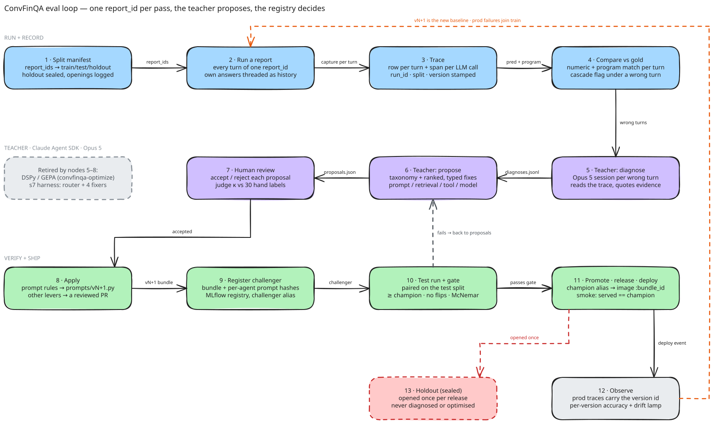

Plan · s04 · branch eval-loop · 2026-08-31
An evaluation loop that links every question to its trace, its gold answer, and a diagnosis
The ask, as you sharpened it: one loop that answers every question of a report, compares each
turn's trace with the gold answer, and hands the wrong turns to a teacher — a Claude Agent SDK agent on Opus 5 —
which proposes the fix: a system-prompt change first, any other lever it can argue for. Splits grouped by
report_id at ~200 questions; MLflow for versions, MLOps, evals, tracing and observability; and
the two loops that exist today — DSPy/GEPA and s7 — decommissioned behind it. The archive is done and verified.
§00 scores the end state against today, §03 is the loop as one drawing with every node explained, §07b is the
decommissioning ledger, and the decisions still yours are at the end.
git mv — prompts kept in place/healthz and the UI say v2 — verified, §0200 · Scorecard
The ideal end state, and where it is today
End state in one sentence: one loop — run a report, trace it, compare it with gold, let the teacher
diagnose and propose, gate the candidate, promote, ship, observe — with the Claude Agent SDK as the only teacher,
MLflow as the only registry and trace backend, and no other path by which a prompt can change. Each capability
below is scored against the code on branch eval-loop. "Partial" means the piece exists but is not
wired to the rest; "wrong" means it exists and misleads.
![The harness as one Excalidraw drawing: twelve component boxes in three rows — data and run (dataset with gold, split manifest, eval-loop runner, the unchanged 4-agent pipeline), record-score-teach (MLflow trace store, scorer and comparator, the Claude Agent SDK teacher, proposals with human review), and version-gate-ship (prompt assembler, MLflow registry, CI gate, deploy and serving) — with a dashed edge from deploy back into the trace store for prod traces and a dashed edge from the registry back to the runner resolving champion or challenger.](s04_assets/harness.svg)
| Capability | Ideal end state | Today (verified) | Status | Reached in |
|---|---|---|---|---|
| Loop unit = one report | A run takes a split's report_ids, answers every turn of each report in order with the agent's own earlier answers as history, and scores every turn against gold with a cascade flag. |
ConversationRunner.run_conversation already threads the agent's own answers. The split is the GEPA-era 60/40 over 120 sampled conversations — not grouped at 200 q, no holdout, no cascade flag in the output. |
partial | Phase 0–1 |
| Teacher | Claude Agent SDK on Opus 5: one session per wrong turn with MCP tools over the trace store, a structured Diagnosis with a typed proposal (prompt / retrieval / tool / model / data), then one aggregation session. Runs on your subscription. |
None. s7 uses five hand-rolled Pydantic AI agents (router + 4 fixers) on lm_max() = deepseek-v4-pro, first-wrong-per-conversation only, prompt rules only. claude-agent-sdk 0.1.77 is in the venv, not in pyproject. |
missing | Phase 2–3 |
| Versions — MLflow registry | Every candidate is a bundle with per-agent prompt hashes, registered as an MLflow model version with champion / challenger aliases; every trace row and /healthz carry its model_version_id. Each version records its lineage: seq (experiment order), parent (what it forked from), and the hypothesis it tests. |
The JSON registry (evaluation/registry.json) and its aliases work. The MLflow registry mirror is a no-op: 1 model name, 0 versions, 0 aliases. Serving runs v3_1 while labelling every trace v2 (§02). |
wrong | Phase 1 (fix), 4b |
| MLOps gate | register → score → judge → compare → promote → release → deploy → observe, each refused without the previous stage's record; deploy bound to the champion; smoke asserts served == champion. | register / score / compare / promote exist and gate each other (comparator.py; gate.py runs in CI). Judge, release and deploy do not exist — deploy-aws.yml ships main and records nothing. |
partial | Phase 4b |
| Evals | convfinqa-evalloop run --split … --version … is one MLflow run whose id is on every trace row; the comparator adds paired McNemar and a cluster-robust CI; the holdout opens once per release with a logged reason. |
convfinqa-eval-api writes a CSV and MLflow metrics with no per-question link and no paired statistics. The committed CSVs are the only eval evidence. |
partial | Phase 1, 4 |
| Tracing | Every turn — serving, eval, teacher — is a trace row with run_id, split, question_id, model_version_id, plus an OTel span per LLM call in MLflow. |
Built 2026-09-02: eval trace rows carry all four identity columns, and MLflow captures every LLM call — run → report → question → agent (triage / preprocess / retriever / calculator) → Agent.run with tokens, prompt and response. Eval traces link to their run's Traces tab; serving opts in with MLFLOW_TRACING=1. Teacher turns: M2. |
done | — |
| Observability | One observability.configure(environment) in every entry point, OTLP to the MLflow backend (D9), dev and prod, per-version dashboards. |
The eval loop now always traces into MLflow and serving has the MLFLOW_TRACING=1 switch (2026-09-02); still missing: one observability.configure for GEPA / s7 CLIs, per-version dashboards, and the D9 backend decision. Logfire stays token-gated and optional. |
missing | Phase 1 + D9 |
| Old loops retired | convfinqa-optimize, backends/dspy.py, optimization/gepa.py, the s7 harness and both entry points are gone; prompts/v2.py and prompts/v3_1.py stay as frozen, registered versions; the Console's Research page launches the new loop. |
Both loops are live: two console scripts, a dspy dependency, ~3.9k lines, 37 tests, and the Research page runs them as subprocesses (serving/research.py). |
missing | Phase 6 (D11) |
The four-agent pipeline and its single turn_events implementation; numeric_match / program_match; the comparator's two rules and the CI gate; committed CSVs that reproduce every historical number with no API call; the keyless demo image. The loop is built around these, not instead of them.
01 · Done
What was archived, what stayed, and why
"Old experiments" in this repo are by-products of three efforts: the GEPA optimisation runs (s5), the
DSPy-vs-Pydantic-vs-API parity study (s3–s5), and the second s7 round (v3_2) that diagnosed
94 cases and promoted zero rules. Everything below moved with git mv into archive/,
so history is intact and any file restores with one command. The rule for what stayed: if code reads it,
it stays — and the GEPA prompts and the s7 rule stores are exactly what code reads.
Archived → archive/… | Why it is a by-product | Kept in place (load-bearing) | Status |
|---|---|---|---|
runs/gepa_smoke_20260429_204159/ — gepa_logs/, 15 scoring / parity CSVs |
A ~30 min wiring check, "NOT a transferable optimisation" (AGENTS.md). Its CSVs were superseded by evaluation/predictions/. |
optimized_runner.json, config.json — still re-scorable via GEPA_NAME=…, still backfilled by tracking/backfill.py |
moved |
runs/gepa_real_20260502_005251/dspy_gepa_logs/ — 25 iteration dumps + gepa_state.bin |
Optimiser internals. The run is complete and is the production overlay; nobody resumes it. | dspy_optimized_runner.json (what prompts_loader.py:12 defaults to), config.json, stats, summary |
moved |
evaluation/predictions/ — dspy_predictions_v2*, api_predictions_v2 (2 rows), parity_report_v2, model_accuracy_comparison_v2 |
The parity experiment. serving/evaldata.py tolerates their absence; the CI gate only re-scores pydantic_predictions_*. |
pydantic_predictions_v{1,2,3_1} + joined + HTML — the REUSE_CACHE cache, the registry's evidence, the demo pack's source |
moved |
evaluation/diagnostics/*_v3_2.* — 9 files; the rule stores were 0 bytes |
Round 2 never assembled prompts/v3_2.py; there is no v3_2 to evaluate (README already said so). |
The whole _v3_1 universe — rules_<agent>_v3_1.jsonl is what prompts/v3_1.py is generated from |
moved |
scripts/ |
Every file is a [project.scripts] entry point (convfinqa-eval / -eval-api / -optimize / -serve), copied by Dockerfile:39, linted by CI — or a deploy / smoke script the AWS workflow runs. |
All of it. Retiring the GEPA and API-parity entry points is a code change (pyproject, tests, README), not a file move. | not moved — decision D3 |
Verified after the move
uv run pytest tests -q→ 149 passedpython -m convfinqa.tracking.gate→ v1/v2/v3_1 consistent, champion v2 77.14% ≥ floor, PASSEDruff check src scripts tests→ clean- Fresh process:
evaldata.available_versions()→['v1','v2','v3_1']; GEPARUN_DIRresolves - Live backend:
GET /eval/runs→["v1","v2","v3_1"],/healthzok
Also touched
archive/README.md— the ledger above, plus the restore command.dockerignore—archive/excluded (the image copiesruns/andevaluation/by path, so this is belt-and-braces)README.md,AGENTS.md,CLAUDE.md— every reference to a moved file now points at the archive; a new invariant names the ruleevaluation/mlflow_snapshot.jsonstill listsgepa_smoke_…ands7-v3_2. Left alone: those runs happened, and the Experiments tab is history, not inventory.
02 · Review
Where observability actually stands
The question you asked — "link a train-set run of report × questions to all its tracing and compare to gold" —
is answerable today only through the predictions CSV. The diagram is the current topology, read from
pipeline/runner.py, evaluation/runner.py, serving/routes/chat.py,
tracking/traces.py, tracking/mlflow_log.py and serving/app.py.
| Layer | What it holds | Who writes it | Keyed by | Gap for the loop |
|---|---|---|---|---|
Trace store.traces/traces.db |
Per-turn row: question, answer, program, gold, correct, bundle JSON, latency, tokens, cost, error code, and the full per-stage capture (input · output · reasoning · metrics; calculator trajectory). |
routes/chat.py (serving), demo replay. Not evaluation/runner.py. |
trace_id (uuid), report_id, turn_index, session_id, bundle_id |
0 eval rows. No run_id, question_id, split, prompts_version column; no program-accuracy flag; no per-LLM-call detail (retries, raw completion). |
Predictions CSVevaluation/predictions/ |
Same capture, flattened: triage_io … calculator_io, history_text, gold answer / program / types, correct. Joined CSV adds q_order, turn_type, conv_type. |
evaluation/runner.py::_write_predictions_csv |
(report_id, turn_index) |
Works as the eval record — /traces/eval/{version}/{report_id} rebuilds a viewer trace from it. But no run identity: which MLflow run, which split, which code SHA. |
MLflowmlruns/mlflow.db |
Run-level: accuracy, holdout_accuracy, program_accuracy, per-slice accuracies, cost totals; the CSV as an artifact; registry aliases. | Inside the runners (_log_eval_run, GEPA, s7), by design. |
run_id, version tag |
trace_info table empty — no traces, no spans. Run ↔ turn link exists only as "the CSV attached to this run". |
| Logfire / OTel | Would be: a span per turn with turn_type, program, answer attributes; child spans per agent run and tool call. |
serving/app.py:90-92, runner.py:477 |
OTel trace/span ids | Constructed and dropped: send_to_logfire="if-token-present" and there is no token in the shell, the repo .env or ~/.env. s02 chose "turns only" deliberately; that choice stands unless D4 changes it. |
The capture is rich enough to diagnose from — the s7 harness already proved that on the CSV — but eval runs never enter the trace store, and nothing anywhere carries a run_id. The loop needs one identity threaded through run → turn → diagnosis, and the eval runner needs to write turns the way the chat route already does.
Versioning ↔ tracing: can you tell which agent version answered?
Short answer: the machinery exists and is stamped on every answer — and today it stamps the wrong version.
What a "version" is here, and where it is linked
- The bundle (
tracking/bundle.py):{prompts_version, gepa_overlay, lm_mini, lm_max, dataset_hash, code_sha}→bundle_id(sha-256, 12 hex). There is no checkpoint to version, so this tuple is the model version. - Registry (
evaluation/registry.json): v1 / v2 / v3_1, each with its bundle and id, thechampionalias, and an append-only promotion history. - Per answer:
TraceStore.record()storesbundle_idand the full bundle JSON on every row (traces.py, indexed).GET /traces/{trace_id}returns it; the Traces detail page prints "bundle · prompts · models · dataset · code" (TraceDetail.tsx:243); the chat Inspector and the status board show the live bundle from/healthz. - Per run: every MLflow run is tagged
bundle_idwith the fingerprint as params (mlflow_log.py:100–109); the Experiments tab shows it. - Not linked: prediction CSVs carry no bundle column (the bundle lives on the run and the registry entry);
/metrics/productiongroups bysourceonly, so there is no per-version series; eval turns are not in the trace store at all.
The bug: two resolvers for "which prompts are live"
pipeline/prompts_loader.py::resolve_prompts() builds the serving agents from PROMPTS_VERSION or prompts.latest() — the newest module on disk.
tracking/bundle.py::prompts_version(), which every trace row, /healthz and the UI report, resolves pin → champion → newest. The two agree only while the newest module is also the champion. It is not: v3_1.py exists, was tried, and was refused promotion.
# fresh process, 2026-08-31 — nothing pins PROMPTS_VERSION
# (Dockerfile, compose, workflows, terraform, .env, ~/.env all unset)
prompts.latest() 'v3_1'
registry champion 'v2'
serving agents built from 'v3_1' ← prompts_loader.PROMPTS (all 4 stages == v3_1)
bundle / trace / healthz 'v2' ← bundle.prompts_version()
DRIFT
Consequences: all 49 serving rows in .traces/traces.db say prompts v2 and were answered by v3_1 — the variant the comparator scored at 76.2% vs 77.1% (−4.2 pp on never-seen). The demo image ships the same way. The status board's serving accuracy describes v3_1 while its bundle line says v2. And because code_sha is inside bundle_id, the same day of v2-labelled traffic already spans five bundle ids — the id is a reproducibility key, not a time-series key.
Today you can answer "which bundle does this trace claim" for any answer, but not "which prompts actually produced it", and not "how did version X do this week". The fix is small and goes first in Phase 1 (§05 · 0): one resolver, the bundle stamped at agent construction rather than recomputed at record time, a regression test that pins the two together, a stable model_version_id beside bundle_id, and a per-version breakdown in /metrics/production. The 49 mislabelled dev rows get a one-off, logged relabel — never a silent one.
03 · Proposal
The loop, end to end
The unit of work is a report. A run takes the split's report_ids, answers every turn of each
conversation in order — the agent's own earlier answers are its history, exactly as
ConversationRunner.run_conversation does today — and compares every turn with the gold answer and
program. The wrong turns go to the teacher; what comes back is a ranked list of typed proposals; what survives
review becomes a challenger that has to beat the champion on the test split before it ships. Three splits with
three jobs: train is read and fitted, test is the gate, holdout
is sealed. Every run is an MLflow run whose id is stamped on every trace row, and every diagnosis points back at a
trace_id.

What each node does
| Node | What it does | Reads → writes | Exists today? |
|---|---|---|---|
| 1 · Split manifest | Allocates report_ids to train / test / holdout: grouped by report, stratified on conversation type, seeded, excluding the 260 conversations the old optimisers touched. The holdout is sealed — an opened log records every use. | dataset → evaluation/splits/eval_loop_v1.json | no optimizer_split() is a 60/40 over 120 sampled conversations |
| 2 · Run a report | For each report in the split, runs every turn through the four agents in order, threading the agent's own answers as history, so a wrong turn poisons the turns below it the way it would in production. One MLflow run per split × version, concurrency 8. | manifest + prompt bundle → answers, programs, per-stage captures | yes ConversationRunner / evaluation/runner.py; missing the run identity and the split |
| 3 · Trace | Records each turn as a trace row — question, answer, program, gold, correct, bundle, the four stage captures — stamped with run_id, split, question_id, model_version_id, and emits an OTel span per LLM call to the backend. | → .traces/traces.db + MLflow spans | partial serving turns are recorded, eval turns are not; spans are dropped |
| 4 · Compare vs gold | numeric_match and program_match per turn; a wrong turn is a cascade when an earlier turn of the same report was already wrong; accuracy, program accuracy and cluster-robust SE go on the run. | trace rows → metrics; correct, program_correct, is_cascade | partial both matchers exist; no cascade flag, no SE |
| 5 · Teacher: diagnose | One Claude Agent SDK session per wrong turn — Opus 5, tools=[] plus an in-process MCP server over the trace store. Reads the four stage captures, quotes evidence, names the failing agent and mode, decides cascade / gold-suspect, drafts a typed fix. On your subscription (§06). | trace rows, gold, the prompt in force → evaluation/diagnoses/<run>.jsonl | no s7's router + 4 fixers on deepseek-v4-pro, prompt rules only |
| 6 · Teacher: propose | One session over all diagnoses: applies the frozen failure taxonomy, counts by agent and mode, clusters would_also_fix, ranks proposals by expected coverage and regression risk. Each proposal carries a lever: prompt (a rule for one agent), retrieval (fact selection, table serialisation), tool (a calculator op, the DSL), model (swap lm_mini / lm_max for one stage), data (gold-suspect exclusions). D12 sets which are allowed. | diagnoses → <run>_proposals.json + review HTML | no |
| 7 · Human review | Accept / reject / edit each proposal on the review page. Before the first run, 30 hand-labelled failures give the judge's κ; three reruns on 20 cases give its flip rate; both are metrics on the diagnosis run (§07). | proposals → accepted set, κ metrics | partial s7's diagnostic_results_v3_1.html viewer; no accept / reject, no κ |
| 8 · Apply | Prompt proposals: rules_store.append_rule → assembler → prompts/vN+1.py (generated, never hand-edited) after verify_patch replays the case. Other levers: a branch with the proposal and its evidence attached — the teacher proposes, it does not commit code. | → rules_<agent>_vN+1.jsonl, prompts/vN+1.py, or a PR | yes for prompts — s7's store / assembler / verify path is kept; no for other levers |
| 9 · Register challenger | register() fingerprints the bundle — prompts version, per-agent prompt hashes, models, dataset hash, code SHA — into registry.json and, for real this time, an MLflow model version with the challenger alias plus one prompt-registry version per agent (§06b). | → registry entry + MLflow model / prompt versions | partial JSON works; the MLflow mirror is a no-op |
| 10 · Test run + gate | Runs vN+1 and the champion (cached) on the same test reports. comparator.py promotes on net positive — more questions fixed than broken on the shared set — with every flip listed and the exact McNemar p on the verdict (rule changed 2026-09-02; the hard no-flip veto is retired), plus a cluster-robust CI from evalloop/stats.py. A fail goes back to node 6 with the flipped questions attached. | two runs → comparison written to both | partial comparator + CI gate exist; no paired statistics |
| 11 · Promote · release · deploy | promote refuses unless scored + judged + compared; moves the champion alias in both registries. The image build bakes bundle.json + PROMPTS_VERSION, tags :bundle_id; demo_smoke.sh asserts the container serves the champion; a deploy event lands in the registry history (§03b). | → aliases, image tag, deploy event | partial promote exists; release / deploy are unbound |
| 12 · Observe | Serving traces carry model_version_id; per-version accuracy on the Traces page; a lamp when served ≠ champion; production failures export as train cases for the next pass — which is the dashed loop back to node 2. | serving traces → next-pass cases | partial traces exist and are mislabelled (§02) |
| 13 · Holdout (sealed) | Opened once per release for the reported number; the opening is logged with the release id so a later variant cannot claim it as unseen. Never diagnosed, never optimised. | → holdout_accuracy on the run, opened on the manifest | no |
The same loop on the tree: files and commands
What is genuinely new
convfinqa/evalloop/—splits.py,run.py,diagnoser.py,aggregate.py,stats.py,cli.py- An in-process MCP server exposing the trace store to the diagnoser
- A committed
evaluation/splits/manifest andevaluation/diagnoses/store
What is reused as-is
turn_events/run_turn— the one pipelinenumeric_match,program_match, the comparator and gate- s7's
rules_store→assembler→prompts/<variant>.pypath, and itsRouterDiagnosis/FixProposalvocabulary mlflow_log.run, the registry, the snapshot
What changes shape
TraceStoregains four columns and adiagnosestableevaluation/runner.pyrecords turns, not only CSV rowsllm.pygains aclaude_agent_options()factory — the gate stays in one file/eval/splitsand/traceslearnrun_idand the new split names
03b · MLOps
The MLOps flow: registry → score → judge → compare → promote → release → deploy → observe
You asked for the eval loop as an MLOps flow with a model registry for version control and champion vs challenger, and for every deployment going forward to carry registry, scoring and an LLM judge over the scored evals. Here is the current build reviewed stage by stage against that bar, then the target flow and — the part that makes "100%" true rather than aspirational — where each stage is refused if the previous one is missing.
yes Model versioning — the bundle fingerprint + evaluation/registry.json; every trace and MLflow run carries it. But the serving label is wrong today (§02) and the MLflow mirror is empty.
yes Eval gate — tracking/gate.py runs on every PR: CSV self-consistency, champion floor. The challenger comparison is printed, not enforced.
yes, manual Promote if the new model wins — convfinqa-mlflow promote / the admin route, refused unless the paired comparison is net positive (flips and McNemar p recorded on the verdict). Nobody has to run it, and nothing deploys it.
no MLOps "live" end to end — no judge stage; the deploy is not bound to the registry; the image serves an unregistered prompt set. The loop gates itself; it does not gate the deployment.
Review of the current build
| Stage | Today | Required before a deploy? | Evidence | Gap |
|---|---|---|---|---|
| Register | exists evaluation/registry.json: three versions with full bundle + id, champion/challenger aliases, append-only history. Registration happens inside the eval runner, so a scored version cannot go unregistered. |
No | tracking/registry.py::register; evaluation/runner.py::_log_eval_run |
The MLflow Model Registry mirror is a no-op: _mirror_to_mlflow searches for model versions tagged bundle_version, but nothing anywhere creates one (no create_model_version/register_model in src/; local store: 1 registered model name, 0 model versions, 0 aliases). registered_model_name = convfinqa-pipeline is a name with nothing behind it. |
| Score | exists Deterministic numeric_match + program_match, logged to MLflow from inside the runner, CSV committed. |
Partly — CI re-scores the committed CSVs (self-consistency, champion floor). | tracking/gate.py |
Scoring is attached to a version, not to the deployment: the champion's registered bundle carries code_sha 0ee36df; nothing checks the shipped code/dataset were ever scored. No test-split scoring; eval turns not traced (§02). |
| Judge | missing No LLM looks at scored evals as part of any flow. The s7 harness is the nearest thing — launched by hand or from the Research page, its outputs are not attached to the eval run and nothing requires it. | No | — | The §06 diagnoser becomes a required stage: one judge run per scored eval run, its report and metrics on the same MLflow run and registry entry, and promotion refused without it. |
| Compare (champion vs challenger) | exists Net positive on the shared set, flips + exact McNemar p recorded (rule changed 2026-09-02); convfinqa-mlflow compare exits 1 when not promotable; the challenger alias exists (currently unset). |
Printed only — the gate says "not promotable is information, not a failure". | comparator.py; gate.py:481 |
No paired statistics (§07); a new evaluated version is not automatically the challenger; comparison runs on the 770 set, not the sealed test split. |
| Promote | exists Append-only event with verdict and runs; comparator-gated; --force recorded, never silent; owner-token API + CLI; demo refuses with 403/501. |
n/a | registry.py::promote; routes/admin.py |
Requires only the comparator. The docstring's rule 2 — "evaluated on the held-out set" — is not enforced; neither is a judge report, nor that the MLflow alias actually moved (it cannot, see Register). |
| Release (image) | broken The image bakes registry.json and CODE_SHA, then serves prompts.latest() — the drift in §02. write_bundle_file() exists and is never called; images are tagged :sha and :latest, never by bundle. |
No | Dockerfile; scripts/aws_build_push.sh; prompts_loader.py |
The artifact that ships is not a registered bundle — it is "whatever main resolves to". |
| Deploy | unrecorded deploy-aws.yml waits for CI, builds, pushes :latest, App Runner auto-deploys, smoke-tests. Rollback is "retag a previous :sha" by hand. |
Only "CI was green". | .github/workflows/deploy-aws.yml; scripts/demo_smoke.sh |
A deployment is not a registry event: nothing records which bundle went live, when, at which URL; the smoke test checks that a champion exists, not that the served bundle is the champion; rollbacks vanish from history. |
| Observe | exists Per-turn traces with bundle, cost, latency, correctness; /metrics/production by source. |
— | tracking/traces.py; routes/metrics.py |
Labelled with the wrong version today (§02); no per-version series; production failures do not flow back into a training split. |
Registration, scoring, comparison and promotion are genuinely built and mostly enforced among themselves. What is missing is the chain to the deployment: nothing binds "what shipped" to "what was registered, scored and judged". Today a deployment has a registry the way a car has a map in the glovebox — present, and not consulted. That is the gap to close, and it is a small amount of code in three places: the loader, the image build, and the deploy workflow.
The target flow, with the refusal at every step
What changes in the registry
// evaluation/registry.json — per version
"lineage": {"seq": 7, // experiment order — monotonic, never reused
"parent": "v2", // what this version forked from (the assembler's base_version)
"hypothesis": "percent-vs-ratio + wrong-year-column rules fix 9 first-wrong
train turns without touching the 154 currently-correct ones"},
"stages": {
"registered": {"at": …, "run_id": …},
"scored": {"at": …, "run_id": …, "split": "test", "dataset_hash": …, "code_sha": …},
"judged": {"at": …, "run_id": …, "n_wrong": 46, "n_diagnosed": 46,
"kappa_vs_human": 0.74, "gold_suspect": 2, "report": "evaluation/diagnoses/<run>.jsonl"},
"compared": {"at": …, "baseline": "v2", "promotable": true, "mcnemar_p": 0.03},
"promoted": {"at": …, "holdout_opened": true, "holdout_accuracy": 0.79},
"deployed": [{"at": …, "bundle_id": …, "image": "…:2f1c9a…", "url": …, "actor": "deploy-aws"}]
}
// MLflow: registry.register() now creates a model version (source = the run's bundle.json artifact,
// tags bundle_version + bundle_id + model_version_id + seq + parent, hypothesis as the description), so `_mirror_to_mlflow` finally finds one and the
// champion / challenger aliases resolve in MLflow as well as in the JSON.The JSON stays the source of truth: the demo container has no tracking store and the registry view must render there. MLflow's registry becomes a faithful mirror rather than a broken one. D6 asks whether you want a hosted MLflow (the nmp-dsci Databricks workspace is one option) to hold the durable history instead — that would make deploy events first-class without a bot commit.
What changes in the build and the workflow
Dockerfile:ARG PROMPTS_VERSION→ENV PROMPTS_VERSION, andevaluation/bundle.jsonwritten by the (already existing, unused)write_bundle_file()at build. The image can only serve the bundle it says it serves.scripts/aws_build_push.sh: tags:latest,:<sha>and:<bundle_id>; rollback becomes "promote the previous version" (recorded), not "retag by hand" (not).ci.yml: arelease-checkjob;deploy-aws.yml: the same check before the build, and arecord-deploystep after the smoke test that appends the deploy event and commits it with[skip ci](needscontents: write).scripts/demo_smoke.sh: asserts/healthz.bundle.prompts_version == championand/healthz.bundle_id == image bundle.json, not merely that a champion exists.routes/app.py:/healthz.registry_match; the status board's mode lamp turns red on mismatch. The frontend proxy needs no new prefix.
Judge coverage (D7): every wrong turn is the floor. Adding a 10% sample of correct turns lets the judge catch "right number, wrong reasoning" beyond what program_match already flags, at ~$0.20 per sampled turn.
04 · Data
Splits: grouped by report, stratified, sealed
The current split machinery has two definitions of "train" that agree on 78 of 120 conversations, and the
200-conversation scored set was seen by GEPA (120 of it) and by s7 (all of it, through the v2 failures).
So the new splits start from the 2,777 train conversations neither optimiser ever touched
(all 3,037 minus the 260 in sampled_report_ids ∪ additional_test_ids). Allocation is by
conversation, never by question — a question's siblings share the report, the history and usually the error.
What "200 questions each" produces
Simulated today from data.loader.training_data(), seed 2026, drawing whole conversations until each split reaches 200 questions.
| Split | Conversations | Questions | Type II convs | Program turns | Job |
|---|---|---|---|---|---|
| train | 57 | 200 | 16% | 64% | read failures, fit rules, verify each rule on its own case (s7 style) |
| test | 54 | 200 | 20% | 61% | candidate vs champion, paired on identical questions; the promotion gate |
| holdout | 54 | 202 | 31% | 63% | sealed; the number in the README, opened once per promotion |
| pool | 2,777 | 10,128 | 29% | 65% | what remains for later rounds — never reuse a split's conversations in another |
Random draws leave the Type II share swinging 16–31% between splits at this size, so allocation must be deterministically stratified — sort each stratum (Type I / Type II conversation, then by question count), deal round-robin across the three splits, stop at the question target. And the type-II share of the pool (29%) is what all three should carry, so a slice comparison between splits means something.
Second: 200 questions is enough to diagnose from and thin to gate on. At 77% accuracy the naive 95% interval on 200 questions is ±5.8 pp. Worse, correctness clusters by conversation — the v2 CSV gives an intraclass correlation of 0.37, a design effect of 2.05, so 200 questions carry the information of ~98 independent ones (±8 pp). A 3-point prompt improvement is invisible on the test split as a point estimate. It is not invisible as a paired comparison: the gate compares the same questions under two prompt versions, and only the discordant pairs matter (McNemar). That is how a 200-question test split still gates honestly: the rule is net positive on the paired set, with every pass→fail flip listed and the exact McNemar p on the verdict — at this size the p is usually not significant, and the verdict says so out loud. If you want the holdout number to carry a tight interval, D1 offers 200 conversations (≈730 q, ±3.1 pp naive) for test and holdout at ~4× the DeepSeek cost — still under $5 per run.
The manifest, committed
evaluation/splits/eval_loop_v1.json
{
"name": "eval_loop_v1", "created_at": "…", "seed": 2026,
"dataset_hash": "d012d251fcb9", # tracking.bundle.dataset_hash()
"excluded": {"sampled_report_ids": 200, "additional_test_ids": 60,
"reason": "seen by GEPA (optimizer_split) and s7 (v2 failures)"},
"stratify": ["has_type2_question"], "target_questions": 200,
"splits": {"train": [...57 report_ids], "test": [...54], "holdout": [...54]},
"opened": [] # appended by `convfinqa-evalloop open-holdout --version v4_1 --reason release`
}evalloop/splits.pybuilds it once (convfinqa-evalloop make-splits), refuses to overwrite an existing manifest, and asserts pairwise-disjoint report ids and zero overlap with the 260 excluded. Reproducibility is guaranteed twice over: the allocation is deterministic fromseed: 2026+dataset_hash, and — the stronger guarantee — the manifest commits the actual report_id lists, so recreating a split never depends on re-running the code. The seed is provenance; the committed list is the truth. (The old machinery is the cautionary tale: two 60/40 splits both seeded 42 agree on only 78 of 120 conversations.)data/loader.py::optimizer_split()stays — it is the provenance of the historical v1/v2/v3_1 numbers. The new manifest is a second, named split family;/eval/splitslists both, and the Evaluations page shows which family a run was scored on.- The holdout's
openedlog is the corpus's "sealed decision surface" rule (onepagecode @56:39): once a version has looked at it, a later version cannot claim it as unseen without saying so.
05 · Observability
Tracing and observability: link run → trace → gold, and pick a backend
Five changes (0–4), in the order they unblock each other; none of them touches the four-stage pipeline or the wire format. Three assessments sit between them — 3b/3c on whether the lifecycle belongs on MLflow and how to set it up, and 3d on what observability exists today and what to host.
0 · One resolver for "which prompts are live", stamped at construction
Fixes the drift found in §02. prompts_loader.resolve_prompts() takes its version from tracking.bundle.prompts_version() (pin → champion → newest) instead of prompts.latest(), so the agents and the label cannot disagree. default_agents() caches the fingerprint beside the agents and routes/chat.py passes that bundle= into record(), so a promotion mid-process cannot relabel answers already generated. A new test pins it: prompts.load(bundle.prompts_version()) == prompts_loader.PROMPTS. Then the two-level key:
bundle_id = sha256(prompts_version, gepa_overlay, lm_mini, lm_max, dataset_hash, code_sha)[:12] # reproducibility key (exists)
model_version_id = sha256(prompts_version, gepa_overlay, lm_mini, lm_max)[:12] # what changes answers (new)
# both: a column on `turns`, a tag on every MLflow run, a column in every prediction CSV
# /metrics/production → sources.<source>.by_version[model_version_id] = {prompts_version, n_turns, accuracy, latency_ms, cost_usd, series[24]}
# registry entry → "served_as": [{bundle_id, first_seen, last_seen, n_turns}] — appended, never edited1 · The eval runner records turns
evaluation/runner.py::make_task_fn already holds every capture; it only needs to call the same
TraceStore.record() the chat route calls, with source="eval", the gold answer, the
correctness flags, and the run identity. Recording stays inside the runner (the MLflow rule: a run that
happens is a run that is recorded). trace_capture_enabled still turns it off in tests.
2 · Identity columns on the trace store
# tracking/traces.py — _ADDED_COLUMNS already widens old files in place
"run_id": "TEXT", # MLflow run id of the eval run (NULL for serving)
"run_name": "TEXT", # 'evalloop-train-v2-20260901' — human handle
"split": "TEXT", # 'train' | 'test' | 'holdout' | 'sampled' | NULL
"question_id": "TEXT", # f"{report_id}_q{turn_index}" — the dataset's own key
"prompts_version": "TEXT", # denormalised from bundle JSON so it is filterable
"model_version_id": "TEXT", # the stable per-version key from §05 · 0 (bundle_id already exists)
"program_correct": "INTEGER", # program_match(pred, gold) — the reasoning oracle
"gold_program": "TEXT",
# + CREATE INDEX idx_turns_run ON turns(run_id); idx_turns_qid ON turns(question_id)
CREATE TABLE IF NOT EXISTS diagnoses (
diagnosis_id TEXT PRIMARY KEY, trace_id TEXT NOT NULL REFERENCES turns(trace_id),
run_id TEXT, created_at TEXT, model TEXT, cost_usd REAL, n_turns INTEGER,
failed_agent TEXT, failure_mode TEXT, is_cascade INTEGER, gold_suspect INTEGER,
confidence REAL, payload TEXT NOT NULL -- the full Diagnosis JSON
);The capture blob is unchanged. /traces?run_id=…&correct=0 and /traces/{trace_id} then answer "show me every wrong turn of this run with its diagnosis" without a CSV parse.
3 · Spans per LLM call, without a vendor token
Per-turn capture tells you what each stage received and returned. It does not tell you that the retriever call was retried twice, took 40 s, or that the structured-output parse was re-prompted. Three ways to get that:
| Option | How | Links to the run? | Cost / dependency | Verdict |
|---|---|---|---|---|
| A · MLflow autolog built 2026-09-02 | mlflow.pydantic_ai.autolog() inside mlflow_log.run(...); installed in the venv (MLflow 3.12.0, verified). Spans land in the SQLite tracking store under the active run. |
Yes — same run_id as the metrics, and mlflow.genai.evaluate(data=search_traces(run_id), scorers=[…]) can score stored traces later without re-running. |
No new dependency, no account. Trace volume: ~4 spans × 200 turns per run; the demo image reads the snapshot, not mlruns/, so nothing ships. |
Shipped as tracking/tracing.py: enable() + a no-op-able span(). The evalloop runner autologs and wraps report and question spans; traces carry model_version_id / split / run_name tags and appear on the run's own Traces tab. Verified on a 10-report v3_1 run: 10 traces, 44 question spans, every stage span named. |
| B · Logfire | Set LOGFIRE_TOKEN; the existing instrument_pydantic_ai() + instrument_fastapi() start exporting. pydantic-evals gets span_tree evaluators for free. |
By OTel trace id; would need the id written onto the trace-store row. | An account and a token in ~/.env; hosted, not in the repo; the demo container must never receive it. |
Optional, dev-only. Coexists with A — MLflow keeps its own tracer provider. One hard rule from the build: never set MLFLOW_USE_DEFAULT_TRACER_PROVIDER=false to merge the two providers; MLflow's processor on Logfire's provider crashes pydantic-ai runs. |
| C · In-house span exporter | A ~60-line OTel SpanExporter writing spans to .traces/spans.db, registered via logfire.configure(additional_span_processors=…). |
Yes, if we stamp run_id as a span attribute. |
Code to own; duplicates what A gives. | Not worth it while A exists. |
3b · Should versioning and observability all live on MLflow?
Mostly yes — and the exception is principled, not accidental. MLflow 3.12 (installed, verified) covers the whole
lifecycle: experiment runs, a model registry with aliases, a prompt registry with versions, tracing via
mlflow.pydantic_ai.autolog(), evaluation of stored traces, and LLM-judge scorers. Consolidating
the lifecycle there removes two half-systems (the empty MLflow mirror; Logfire spans built and dropped). What should
not move is the product's own view of serving: the in-app trace store exists because the demo container has
no tracking store and must still answer "why did it answer that" — keyless, from the image.
| Concern | Owner | Why there | Linked by |
|---|---|---|---|
| Model versions, champion / challenger aliases, promotion history | MLflow model registry (system of record) → registry.json exported for the demo | Aliases, versions, tags and a UI already exist; the JSON becomes an export, not a second truth. | model_version_id, bundle_id |
| Prompt versions per agent | MLflow prompt registry → prompts/<variant>.py stays the generated, committed source | Version + alias per agent; diffable; the LangSmith-style surface without a new vendor. | prompt hash in the bundle's agents block |
| Eval runs, metrics, artifacts, splits | MLflow runs (already) | Logging lives inside the runners; nothing changes. | run_id |
| Eval traces — per LLM call, per tool call | MLflow traces via autolog, under the eval run | Scoreable later without re-running; no token, no new dependency. | trace_id tag ↔ trace-store row |
| Judge outputs and their calibration metrics | MLflow: scorer results on the run + diagnoses.jsonl artifact (also committed) | Promotion reads the stages.judged record; the artifact is the evidence. | run_id, trace_id |
| Serving and demo turns — the product's observability | In-app trace store (.traces/traces.db) + /metrics/production + the Traces page | Ships in the image, works with no tracking server and no key; the status board reads it. MLflow's SQLite is dev state and is not in the image. | same model_version_id / bundle_id; optional MLflow spans in dev |
| Live APM (FastAPI latency, HTTP errors) | Logfire, optional, dev-only — instrumentation stays, token optional | OTel-native and better at live service telemetry, but hosted and token-gated; nothing in the loop depends on it. | — |
Today MLflow is sqlite:///mlruns/mlflow.db on one laptop. That is fine for runs and traces, and it is why the registry lives in committed JSON: CI, the VM and the deploy workflow cannot read a laptop's SQLite file. A system of record that CI consults needs a shared server — Databricks-managed MLflow (the nmp-dsci workspace; MLflow 3 GenAI tracing, judges and the prompt registry are native there) or a self-hosted mlflow server with Postgres + S3. That is decision D6, sharpened below. The rule that holds either way: serving never calls MLflow at request time. The container resolves its champion from the baked bundle.json and the exported snapshot, so a tracking-server outage cannot take the demo down or change what it answers with.
3c · The recommended MLflow setup: versioning, MLOps and observability, dev and prod
You want one place that holds model versions, the promotion flow and the traces, reachable from the laptop and from the deployments, with the LangSmith-style trace explorer. The recommendation is Databricks-managed MLflow as the system of record (D6 · B), rolled out in two tiers so the useful part lands without waiting on a preview feature. The self-hosted server (D6 · C) is the same architecture if you would rather not depend on the workspace; the code changes are identical.
Tier 1 — config, not code. Do first.
- Tracking + runs:
MLFLOW_TRACKING_URI=databricks,MLFLOW_EXPERIMENT=/Shared/convfinqa.tracking_uri()already honours the env var and_mlflow()creates the experiment by name, so every existing eval / GEPA / s7 run logs there unchanged. - Traces:
mlflow.pydantic_ai.autolog()insidemlflow_log.run(§05 · 3) and in the serving process when a tracking URI is set. MLflow 3 exports traces asynchronously by default (MLFLOW_ENABLE_ASYNC_TRACE_LOGGING=True, verified), and we still wrap the export so a failure can never fail a turn. The MLflow trace UI is the explorer you are asking for. - Model registry: on Databricks the registry is Unity Catalog —
<catalog>.<schema>.convfinqa_pipelinewith aliaseschampion/challenger. UC needs a real MLflow model, so the bundle is logged as a smallpyfuncwhose artifacts arebundle.json+ the four prompts and whosepredict()callsrun_turn. That also givesmlflow.genai.evaluate(predict_fn=…)its natural target. - Prompt registry:
mlflow.genai.register_prompt(name="convfinqa/<agent>", …)+set_prompt_alias(alias="champion")per agent — the pattern Databricks' ownoptimize_prompts()flow uses (register, then promote conditionally). - Judge + evaluation:
mlflow.genai.evaluate()with our deterministic scorers plus the Opus 5 diagnoser wrapped as a scorer; MemAlign judge alignment via a labelling session is the hosted version of the κ-vs-human step in §07. - Exports for the demo:
convfinqa-mlflow snapshotreads the UC registry and the experiment and writesregistry.json+mlflow_snapshot.jsonas today — the keyless image keeps working and never contacts the workspace.
Tier 2 — optional, region-gated
- Unity Catalog trace tables + production monitoring scorers: link the experiment to a UC schema, traces land in
mlflow_experiment_trace_otel_{logs,spans,metrics}, monitoring scorers run continuously, and you get SQL over traces. Requiresmlflow[databricks]>=3.9, the "OpenTelemetry on Databricks" preview, and — per the Databricks skill reference — a workspace in us-east-1 or us-west-2; needs a SQL warehouse (DBU cost). - If the workspace is elsewhere, Tier 1 already gives the trace explorer and evaluation; "monitoring" becomes a scheduled job that runs the scorers over
mlflow.search_traces()— the same result, minus the SQL tables.
Who authenticates how
| Where | Auth | Writes | Reads |
|---|---|---|---|
| Laptop / VM | CLI OAuth profile (DATABRICKS_CONFIG_PROFILE) — two exist, DEFAULT and nmp-dsci, both AWS-hosted and both currently expired (Valid: NO); you pick one and re-login | runs, traces, registry, prompts | everything |
| CI (release-check, record-deploy) | Service principal, OAuth M2M — DATABRICKS_HOST, DATABRICKS_CLIENT_ID, DATABRICKS_CLIENT_SECRET as GitHub secrets. Never a PAT, never a personal token (skill guidance). | deploy events, alias checks | registry stages |
Live dev deployment (docker compose dev, has the DeepSeek key) | The same service principal, injected like the model key | serving traces, async | — |
| Public demo (App Runner, keyless) | none — by design. It reads the baked exports and writes only its in-app trace store. Putting a workspace secret in that image would break the invariant the deployment is built on. | in-app store only | snapshot + registry.json |
# 0. you, interactively — the CLI sessions have expired (both profiles show Valid: NO)
databricks auth login --host https://dbc-dcacaf46-c4be.cloud.databricks.com --profile nmp-dsci
# 1. point the existing tracking at the workspace and re-run the cached eval — zero code change
DATABRICKS_CONFIG_PROFILE=nmp-dsci MLFLOW_TRACKING_URI=databricks MLFLOW_EXPERIMENT=/Shared/convfinqa \
REUSE_CACHE=1 uv run convfinqa-eval # three eval runs appear in the workspace UI
# 2. then Phase 4b makes the registry real: pyfunc bundle → UC model + aliases, prompts → prompt registry,
# snapshot exported from UC, service principal in CI, release-check reading UC aliasesRegion check before Tier 2: the workspace host does not reveal its region; databricks current-user me --profile nmp-dsci after login, then the workspace's cloud region in the account console. The App Runner demo is in ap-southeast-1, which is irrelevant to Tier 1 and only matters if Tier 2 ingestion were to come from it — and it never will, because the demo is keyless.
3d · Is there observability today? And what to host instead
Short answer: the only observability that works today is the app-rolled one you said you don't want — and it covers a third of the system. Everything below was re-verified on the tree this morning.
| Layer | Instrumented? | Actually exporting? | Covers |
|---|---|---|---|
| Logfire / OTel | Yes — configure() + instrument_pydantic_ai() + instrument_fastapi() in serving/app.py:99–101, plus hand-written spans at runner.py:132 and chat.py:332/344/380. |
no send_to_logfire="if-token-present" and there is no LOGFIRE_TOKEN in the shell, the repo .env, ~/.env, and no .logfire/ directory. Every span is built and dropped. |
The API process only. |
| In-app SQLite store | Bespoke — TraceStore.record() from routes/chat.py. |
yes it is the store: 66 turns (49 serving, 17 demo), with gold, correctness, cost and full per-stage capture. | Serving + demo turns. This is the "rolled by app" part. |
| MLflow | Run-level, inside the runners. | runs yes, traces no — trace_info holds 0 rows. |
Eval / GEPA / s7 runs, as metrics + artifacts. |
logfire.configure() is called in exactly one place — serving/app.py. So convfinqa-eval, convfinqa-optimize (GEPA) and the s7 diagnosis CLI are not instrumented at all: importing the eval path leaves Logfire unconfigured (verified — GLOBAL_CONFIG._initialized == False). Those three paths make the overwhelming majority of the system's model calls — a 770-question eval, a 5–9 hour GEPA run, an s7 round. Whatever backend you choose, the first fix is a single bootstrap that every entry point calls, not a token.
You are not locked in — and that is proven, not assumed
Having the Logfire SDK does not mean sending data to Pydantic's cloud. logfire.instrument_pydantic_ai()
emits ordinary OpenTelemetry spans; logfire.configure() accepts additional_span_processors
and AdvancedOptions.base_url; and opentelemetry-exporter-otlp-proto-http 1.40 is already
installed as a Logfire dependency, alongside the FastAPI and httpx instrumentors. I ran the switch against an
in-memory exporter — no network, no token, no vendor — using the app's own span shape from runner.py:
logfire.configure(send_to_logfire=False, service_name="convfinqa", environment="proof",
additional_span_processors=[SimpleSpanProcessor(exporter)])
logfire.instrument_pydantic_ai(); logfire.instrument_httpx()
→ spans captured by a non-Logfire backend: 2
'stage {stage}' {'stage': 'triage'}
'turn {report_id}' {'report_id': 'Double_AES/…', 'turn_type': 'program', 'answer': '69.4%'}
resource: {'service.name': 'convfinqa', 'deployment.environment.name': 'proof'}
Swap SimpleSpanProcessor(InMemoryExporter) for BatchSpanProcessor(OTLPSpanExporter(endpoint=…))
and those spans land in Phoenix, Langfuse, SigNoz, Grafana, a self-hosted collector — or Databricks, which accepts raw
OTLP at /api/2.0/otel/v1/traces. The backend is a config choice you can change later, and
deployment.environment.name is how dev and prod stay separable in one backend.
What "dev and prod" actually means here — an asymmetry worth naming
| Environment | What runs there | LLM spans? | Holds secrets? |
|---|---|---|---|
local | Your laptop / the VM: eval runs, GEPA, s7, the dev server | The vast majority — 770-question evals, 5–9 h optimisations | yes (DeepSeek key) |
dev-deploy | docker compose dev — the same image with DEMO_MODE=0 and a real key | yes — genuine served turns | yes |
demo | App Runner, the public URL | none, by construction — DEMO_MODE=1, no API key, chat replayed from the recorded pack | no — deliberately |
1. Your "prod" makes no model calls. The public deployment answers from a recorded pack, so there are no production LLM traces to capture — only HTTP routes, latency, errors and replay events. That is worth having, but it is APM, not LLM observability. If you want real production LLM traces, the thing to trace is dev-deploy (or you decide to run a keyed public deployment, which changes the demo's premise and its cost).
2. Tracing the demo means putting a secret in the image that says it has none. The Dockerfile's premise is explicit: "One container, no database, no secrets… There is no API key in the environment for it to use either." An observability ingest token cannot cause model spend, but it is still a credential in a public image. Options: ship a scoped, write-only, rotatable ingest key; or don't trace the demo at all and keep the invariant intact — which is the default I would take, since the demo's own Traces page already shows visitors what they came to see.
What becomes of the in-app store
It is doing three jobs, and only the third genuinely requires bespoke code:
- Telemetry (latency, tokens, cost, errors) — a platform does this better. move
- Eval linkage (gold answer, correctness, per-stage capture) — platforms model this too (MLflow expectations, Phoenix/Langfuse annotations), and §05 needs it joined to
run_idanyway. move, with the gold as expectations - Product surface — the demo's Traces page and status board must render inside a keyless container with no server to call. No hosted backend can do that. keep
So the store is demoted rather than deleted: it becomes the demo's baked display fixture — the same pattern mlflow_snapshot.json already uses for the Experiments tab — while real observability moves to the platform. That is the honest version of "not rolled by app": the bespoke thing survives only where it is showing a portfolio visitor a recording, and never as the system of record.
The fix, in code
# src/convfinqa/observability.py — the one place telemetry is configured.
# Same rule as llm.py: one file decides, and every entry point calls it, so a new
# entry point inherits tracing rather than rediscovering that it has none.
def configure(environment: str) -> None:
"""Point OTel at whatever OTEL_EXPORTER_OTLP_ENDPOINT names. No vendor in the signature."""
import logfire
processors = []
if endpoint := os.environ.get("OTEL_EXPORTER_OTLP_ENDPOINT"):
from opentelemetry.exporter.otlp.proto.http.trace_exporter import OTLPSpanExporter
from opentelemetry.sdk.trace.export import BatchSpanProcessor
processors.append(BatchSpanProcessor(OTLPSpanExporter(f"{endpoint}/v1/traces")))
logfire.configure(send_to_logfire="if-token-present", # cloud stays opt-in
service_name="convfinqa", environment=environment,
additional_span_processors=processors)
logfire.instrument_pydantic_ai()
logfire.instrument_httpx()
# called by: serving/app.py, scripts/evaluate.py, scripts/optimize.py,
# diagnosis/cli.py, evalloop/cli.py ← the three that have nothing todayZero new dependencies (every OTel package listed above is already resolved), one env var to switch backends, and environment= keeps local / dev-deploy / demo separable in one backend. Fanning out to two backends at once is a second processor in the same list.
Which backend to host
Checked against official docs on 2026-09-01, and against this repo's installed packages where that was possible. Volume for sizing: one 770-question eval ≈ 7,000 spans (770 turns + 2,542 LLM calls + their httpx spans + 1,168 calculator tool calls); a 200-question evalloop run ≈ 1,800; a real GEPA run is the driver at 40,000+.
| Backend | Self-host | Your OTLP as-is | LLM / eval UI | Licence | Verdict |
|---|---|---|---|---|---|
| MLflow 3 self-hosted or Databricks |
yes server + Postgres + S3, or the managed workspace. You already run it. |
yes/v1/traces since 3.6.0 — verified in the installed 3.12.0.1 |
Trace UI, search_traces, genai.evaluate over stored traces, judges, prompt + model registry |
Apache 2.0 | recommended |
| Arize Phoenix | yes, freely One container. SQLite by default, Postgres via PHOENIX_SQL_DATABASE_URL. Lowest ops cost here. |
yes 6006 HTTP + UI, 4317 gRPC |
Strong — traces, datasets, experiments, LLM-judge evals, manual annotation.2 | ELv23 | best second opinion |
| Langfuse | yes, freely Heavier: Postgres + ClickHouse + Redis + S3 |
yes | Richest — evals, datasets, prompts, playground, and annotation queues in the free core | MIT core4 | if the UI is the product |
| Logfire | Enterprise only Private Helm chart, K8s, three Postgres DBs, an IdP, sales-gated |
yes (as ingest) | Yes — and the best DX for this stack. Hosted free tier absorbs your whole volume.5 | Proprietary | hosted yes, self-host no |
| LangSmith | Enterprise only ClickHouse + Postgres + Redis + K8s |
yes, via its OTel endpoint | Yes | Proprietary | wrong shape its gravity is LangChain, which you do not use |
| SigNoz / Tempo / Jaeger | yes | yes | no generic APM — no eval, dataset or gold semantics |
MIT+EE / AGPL / Apache | only if you want service APM, not LLM observability |
- Confirmed in this venv:
mlflow/server/otel_api.pyexists,/v1/tracesis routed, andx-mlflow-experiment-idis a real constant. HTTP only — no gRPC, which is fine because…-otlp-proto-httpis the exporter already installed and the gRPC one is not. - Managed annotation queues are documented under Arize AX, the commercial product; I could not confirm they ship in the OSS build. Assume manual annotation yes, queues no, until you see them.
- ELv2 is source-available, not OSI open source — it forbids offering the software to third parties as a hosted service. Irrelevant for internal use. Arize's own docs call Phoenix "fully open-source", which is not an accurate licensing statement.
- Only SCIM, audit logs, project-RBAC, retention policies, server-side masking and UI customisation are EE-gated.
- Personal tier: 10M telemetry records/month hard-capped at $0, 30-day retention, 3 projects. Your heaviest month — three eval re-scores plus a real GEPA run — is well inside that. Pricing pages change; re-check before relying on it.
Send the traces to MLflow — wherever D6 puts MLflow. You are already choosing it as the system of
record for versions, promotion and prompts (§03b, §05·3c). Traces belong beside the runs that produced them, keyed by
the same run_id, so "which agent version answered, and what did every stage do" is one query rather than a
join across two vendors. It accepts your existing spans unchanged, it is Apache-2.0, and whether it ends up
Databricks-managed (D6·B) or a mlflow server you run (D6·C), the app-side change is the same one env var.
That is the "one thing I can host, dev and prod" you asked for, and it costs no new service.
Then buy a cheap insurance policy. MLflow's trace explorer is younger than Logfire's or Langfuse's. Because fan-out is one extra span processor, run Phoenix in a container (or leave hosted Logfire's free tier connected) for a few weeks alongside, and keep whichever you actually open. Nothing in the eval loop depends on that choice, and switching later is a config change, not a migration.
Four things that will bite, all verified
- Async trace export silently drops. Default on, queue 1000, 10 workers — when the queue fills, traces are discarded with no error. A GEPA run at 40,000+ spans will hit this. Set
MLFLOW_TRACE_SAMPLING_RATIOfor the optimisation paths and leave evals at 1.0. - Retention is infinite by default. Schedule deletion, or the store grows without bound — the same lesson
.traces/already carries in the.gitignore. - OTLP ingest is HTTP only — no gRPC. Fine:
opentelemetry-exporter-otlp-proto-httpis the one already installed, and gRPC is not. - Custom
@scorerregistration for online scoring is Databricks-only (arbitrary-code-execution on deserialisation, mlflow#23163). Offlinegenai.evaluate()with custom scorers works on OSS — which is what §07 needs; only continuous production scoring is affected.
What this replaces, concretely
- Deleted: nothing yet — the in-app store keeps serving the demo (job 3 above).
- Demoted:
.traces/traces.dbstops being the system of record and becomes the demo's baked fixture. - Added:
observability.py(above), one env var per environment, and — if you take the insurance — onedocker run arizephoenix/phoenix. - Unblocked: the eval, GEPA and s7 paths get traced for the first time; §05 · 1–2's
run_idlinkage then works across both stores because the span carries it.
One caution on scope: this is the observability layer only. It does not change what the demo serves, and it must not — the container resolves its champion from baked artifacts, and a tracing backend being down can never affect an answer.
4 · The read side
GET /traces?run_id=&split=&correct=;GET /traces/{trace_id}returns the diagnosis alongside the capture when one exists.GET /eval/splitslists both split families;GET /eval/runskeeps its shape (versions), and a newGET /eval/loop/runslists evalloop runs with split, version, accuracy, n wrong, n diagnosed, cost.- The Traces admin page gets a run filter and a "Diagnosis" panel in the inspector — the same sticky-panel mechanics
reporting/html_report.pyuses, in React. Phase 5, optional. frontend/vite.config.ts BACKEND_PREFIXESalready covers/evaland/traces; no new prefix is needed.
06 · The diagnoser
One Opus 5 session per wrong answer, on the Claude Agent SDK
The s7 harness diagnoses with a DeepSeek router + four specialists over a JSON payload and verifies each rule
by replaying the conversation. It works, and its vocabulary (FailedAgent, FixType,
RouterDiagnosis, FixProposal) is kept. What changes: the diagnoser becomes an
agent with tools over the trace store, so it can pull the document, the prior turns, the prompt in
force and similar failures itself rather than receiving one frozen payload — and it runs on Opus 5, whose
reasoning is the product here.
Built as evalloop/teacher.py + three CLI stages (diagnose → propose → gate-targeted),
teacher on the house lm_max() (deepseek-v4-pro) through the llm.py choke point — the
Agent-SDK/Opus session below stays the M2-hardening upgrade, not a prerequisite. The loop is deliberately
one subagent per optimisation: diagnosis attributes every first-wrong question (cascades excluded) to
triage / preprocess / retriever / calculator using the gold answer and gold program; the agent with the most
first-faults is the biggest upside and becomes the sole target; the challenger changes only that agent's prompt
(generated module, other three imported unchanged), so a 200-question pass yields four sequenced optimisations —
fix triage, test, deploy, then preprocess, retriever, calculator.
The cycle that ran: v3_1's 6 first-faults → retriever 3 · calculator 2 · preprocess 1 · triage 0 →
target retriever → prompts/v4.py (3 merged rules, retriever only) → same 10 reports:
63.6% → 72.7% (+9.1pp, 5 fixed vs 1 broken, McNemar p=0.22), retriever first-faults 3 → 2 →
v4 promoted, the full targeted verdict on the registry history. The second diagnosis pass already
named the next target (preprocess, 3 faults) and flagged one gold-suspect case.
Promotion rule (M2): the targeted subagent's first-fault count must drop AND overall paired
accuracy must not regress — so a real subagent fix is never discarded because the small shared set tied overall;
the M1 net-positive rule still promotes on its own strength.
Where it is captured: teacher runs live in their own MLflow experiment
(convfinqa-optimization) with full tracing — one trace per diagnosed case, the run's artifacts
(diagnoses.jsonl, proposal.json, summary.json) are the human-review
surface until the console page (M4) reads the same via search_runs. The artifact is also the loop's
memory: each teacher run downloads prior runs' diagnoses.jsonl from MLflow and feeds
"already proposed — extend, don't repeat" into the next diagnosis (verified: the v4 pass saw all 6 prior
diagnoses). Eval runs stay in the convfinqa experiment; the two histories never interleave.
Session shape
# convfinqa/evalloop/diagnoser.py
from claude_agent_sdk import query, ClaudeAgentOptions, ResultMessage
from convfinqa.llm import claude_agent_options # gate + key, one place
async def diagnose(trace_id: str, *, run_id: str) -> Diagnosis:
opts = claude_agent_options(
model="claude-opus-5",
system_prompt=DIAGNOSER_SYSTEM_PROMPT, # taxonomy + rules of evidence
tools=[], # no Read/Bash/Edit: trace tools only
mcp_servers={"trace": trace_tools_server()},
allowed_tools=["mcp__trace__*"],
permission_mode="dontAsk",
setting_sources=[], # ignore CLAUDE.md, settings, plugins
# auth: claude_agent_options() scrubs ANTHROPIC_API_KEY from the child
# env so the CLI uses your subscription — see Billing below
max_turns=12, max_budget_usd=0.50, # runaway guard, NOT a spend cap
effort="high",
output_format={"type": "json_schema",
"schema": Diagnosis.model_json_schema()},
hooks={"PostToolUse": [HookMatcher(hooks=[log_tool_call])]},
)
async for msg in query(prompt=f"Diagnose trace {trace_id}.", options=opts):
if isinstance(msg, ResultMessage):
if msg.subtype != "success" or msg.structured_output is None:
return Diagnosis.unknown(trace_id, reason=msg.subtype)
d = Diagnosis.model_validate(msg.structured_output)
d.cost_usd, d.n_turns = msg.total_cost_usd, msg.num_turns
return dAll of these option names exist on the installed claude-agent-sdk 0.1.77 (checked: output_format, max_budget_usd, tools, mcp_servers, hooks, effort; ResultMessage.structured_output, .total_cost_usd). The package is in the venv but not in pyproject.toml — Phase 2 adds it with uv add. The CLI it drives is installed (2.1.251) and authenticates on your Claude subscription, not an API key — see Billing below.
Tools the agent gets (in-process MCP)
get_trace(trace_id)— the turn row + full capture (inputs, outputs, reasoning, calculator trajectory, metrics)get_conversation(trace_id)— every turn of the same run + report in order, with gold and correct, so cascades are visibleget_document(report_id)— the report text + table the retriever saw (_DOCS)get_gold(question_id)— gold answer, gold program, turn type, conv type, and the paper's executed answerget_prompts(prompts_version)— the four system prompts in force for that runfind_similar_failures(failure_mode | text, run_id)— other wrong turns in the run, so the agent proposes rules that cover more than one caserender_stage_input(trace_id, stage)— the exact wire-format text the stage received, viarender_chat_inputs
No file tools, no Bash: the agent cannot edit prompts or run the pipeline. Proposals are text; verification is the harness's job (§07). Every tool call and its cost is written to the MLflow run by the PostToolUse hook.
The output contract
class Diagnosis(BaseModel):
trace_id: str; question_id: str; run_id: str
verdict: Literal["diagnosed", "cascade", "gold_suspect", "unknown"]
is_cascade: bool # an earlier turn in this conversation was already wrong
first_wrong_turn: int | None # the turn the cascade descends from, if any
failed_agent: FailedAgent # the FIRST failing stage of the turn — the rest are victims (s7 vocab)
failure_mode: str # a slug from the frozen taxonomy (§07), or "new:<label>"
root_cause: str # 2–4 sentences, evidence-first
evidence: list[Evidence] # {stage, field, quote} — quoted from the capture, not paraphrased
proposed_fix: FixProposal | None # rule + fix_type + confidence + rationale (s7 vocab)
lever: Literal["prompt", "retrieval", "tool", "model", "data"] | None # what kind of change; D12 bounds it
would_also_fix: list[str] # question_ids of similar failures the rule should cover
confidence: float
notes_for_human: str # what the reviewer should check before acceptingScope: diagnose everything, optimise first faults only
Every wrong answer is diagnosed — but a turn below an earlier wrong turn is a cascade: the history the pipeline saw was already false. The diagnoser labels it, attributes it to the first wrong turn, and still records what went wrong locally (a cascade can also add its own error). Fixes are fitted from first faults only, on both axes: the first wrong turn of a report — every later turn is contaminated by it — and, within that turn, the first failing stage: a bad retrieval makes the calculator wrong, so the rule goes to the retriever, never to the victims downstream. Cascades and downstream stages are regression evidence, not optimisation targets. On v2, 81 of 176 wrong turns are cascades.
Concurrency and the real budget: rate, not dollars
Each query() is a CLI subprocess; fan out with asyncio.Semaphore(6). Context per case is small — median 2.5k tokens of trace + document, p90 4.5k, plus ~6k of prompts and taxonomy — so a 12-turn session is ~30–50k input tokens, and a 200-question pass is ~46 sessions.
On the subscription the constraint is your Opus allowance, not spend. The SDK surfaces exactly that: RateLimitType is five_hour | seven_day | seven_day_opus | seven_day_sonnet | overage, and RateLimitInfo carries status, utilization, resets_at and overage_status. So the diagnoser watches for RateLimitEvent and treats it as backpressure: drop the semaphore on allowed_warning, park the queue on rejected, and resume at resets_at. Because diagnoses are cached per (trace_id, prompt_sha, model), a parked pass resumes without re-spending anything.
total_cost_usd still reports a number — read it as "what this pass would have cost on the API" (≈$0.20/case at Opus 5 rates, ≈$10 per 200-question pass). That is a useful comparator to log against a run, and it is not money leaving your account.
Caching and idempotence
Keyed by (trace_id, diagnoser_prompt_sha, model) in the diagnoses table and mirrored to evaluation/diagnoses/<run_name>.jsonl (committed, the way case_results_*.jsonl is). Re-running a pass re-diagnoses only what is missing. A verdict of unknown is stored, never treated as pass.
The Agent SDK drives the Claude Code CLI as a subprocess, and the CLI authenticates however it is configured — for you
that is the subscription (CLAUDE_CODE_OAUTH_TOKEN). No ANTHROPIC_API_KEY is required, and the
earlier draft of this plan was wrong to propose a require_anthropic_api_key() gate. It is deleted.
The trap, verified in this repo:
config.py:29 load_dotenv(Path.home() / ".env") # runs on ANY import of convfinqa
~/.env contains BOTH ANTHROPIC_API_KEY and CLAUDE_CODE_OAUTH_TOKEN
SDK transport inherited_env = {k: v for k, v in os.environ.items() if k != "CLAUDECODE"}
process_env = {**inherited_env, …, **options.env, …}
→ importing convfinqa puts ANTHROPIC_API_KEY into os.environ (verified: False before, True after)
→ the SDK hands the whole environment to the CLI
→ the CLI finds an API key and bills the API account instead of the subscription — silently
The diagnoser must import the package (trace store, prompts, metrics), so this fires by construction. The fix is
the env= option, which merges over the inherited environment — but note it merges, it does not delete,
so {"ANTHROPIC_API_KEY": ""} sets an empty value rather than removing the variable. The reliable form is to
build the child environment explicitly and drop the key, in the one place options are constructed:
# llm.py — still the single door, now for auth *and* the demo gate
def claude_agent_options(**kw) -> "ClaudeAgentOptions":
guard_llm_call() # DEMO_MODE refuses here, as before
from claude_agent_sdk import ClaudeAgentOptions # imported inside: keyless import stays true
child = {k: v for k, v in os.environ.items() if k != "ANTHROPIC_API_KEY"}
return ClaudeAgentOptions(env=child, **kw) # CLI falls back to subscription OAuth
Two tests worth pinning: that claude_agent_options().env contains no ANTHROPIC_API_KEY, and the
existing test_demo_mode.py::test_every_module_imports_without_a_key, which keeps passing because
claude_agent_sdk is imported inside the function and the demo image never needs it.
Worth confirming once by eye on the first real run — check the CLI is reporting subscription usage, not API
spend — since "which credential won" is not something a plan should assert on your behalf.
The subprocess transport injects the active OpenTelemetry context (traceparent) into the CLI. So if the diagnoser runs inside the eval run's span (§05 · 3d), every diagnosis session nests under the run that produced the failure — one trace tree from "eval run" to "wrong turn" to "why". That linkage costs nothing but doing the observability work first.
06b · Multi-agent
Per-agent gold and per-agent versions
Two questions from review: does a four-agent pipeline need a golden answer per agent, and should versioning be per sub-agent? Yes to both — and the first needs far less authoring than it sounds, because the dataset's gold program plus gold answer already determine what three of the four stages should have produced.
All four phases shipped and ran: lineages seeded (v1 t1.p1.r1.c1 → v3_1 t3.p3.r3.c3 →
v4 t3.p3.r4.c3), compositions on run names/params/traces, the per-agent metric panel on every run,
the targeted gate on deterministic metrics, and the four prompts mirrored into MLflow's Prompts tab
(retriever at Version 2). Protocol hardened: promotion evidence must come from the unseen
test split — both gates refuse --promote on train evidence; v4's train-only promotion was
rolled back accordingly. On 10 unseen test reports the panel then told the whole story: retriever recall
did transfer (0.744 → 0.780) but calculator exec collapsed (0.778 → 0.630, 0.917 → 0.692 even given
full recall), overall −11.8pp → v4 refused, v3_1 stays champion — the train +9.1pp was bias,
exactly what the unseen-evidence rule exists to catch, and the panel names the next diagnosis target.
Identity. Each agent's prompt is versioned by content hash + a human seq in its own lineage:
triage t1, t2, … · preprocess p1, … · retriever r1, r2, … ·
calculator c1, …. The ledger lives in registry.json → agent_prompts
(hash, seq, parent, source, run_id); unknown hashes auto-register when a bundle is fingerprinted, and a
backfill hashes v1/v2/v3_1/v4 to seed the lineages. The bundle module (v4) stays the human release name and
the loadable unit; the registry states its composition as fact:
v3_1 = t1.p1.r1.c1, v4 = t1.p1.r2.c1 — same three agents,
retriever bumped, changed_agents: ["retriever"], parent: v3_1.
Naming. Experiment names stay stable (convfinqa,
convfinqa-optimization) — a combination is a run-level fact, not a container. Every run and trace
gets tags composition=t1.p1.r2.c1, v_triage=t1 … v_calculator=c1, and (for
challengers) changed_agent=retriever; the run name carries the composition for humans:
evalloop-train10-v4·t1p1r2c1-<ts>. Roll-up = an MLflow filter:
tags.v_retriever = 'r2' lists every experiment that ever ran that retriever prompt, across bundles.
Per-agent accuracy on every eval run (the derived gold in the table below, already measured on
v2): acc_triage_turn_type / acc_triage_conv_type,
acc_preprocess_skeleton, retriever_operand_recall,
acc_calculator_exec + program_accuracy (+ calculator_acc_given_full_recall) —
logged beside accuracy so a run reads: overall 72.7% · triage 95% · retriever recall 61% · … The
teacher's faults_<agent> stays as the judgment layer on top; the targeted gate upgrades to
prefer the deterministic metric for its target (retriever challenger must move
retriever_operand_recall), with attribution as the preprocess fallback. Promotion stays
bundle-level — a preprocess change alters the retriever's inputs, so only the composition has a measured
accuracy — but the promotion record now carries per-agent before/after.
Phases: A — hashes + ledger + tags + backfill (no behaviour change, ~½ d) ·
B — evalloop/stage_scores.py per-agent metrics on runs and CSV columns (~1 d) ·
C — targeted gate consumes the deterministic metric; per-agent before/after on the verdict (~½ d) ·
D (optional) — MLflow prompt-registry mirror, one registered prompt per agent with champion/challenger aliases.
Where each agent's gold comes from
| Agent | Its output | Gold available | Derived how | Score | Limit |
|---|---|---|---|---|---|
| triage | turn_type, conv_type | direct | gold_turn_type, gold_conv_type are already columns in every predictions CSV. | exact match, per field | none |
| preprocess | sub_questions, placeholder program | structural | The gold program's operation skeleton (subtract → divide) via parse_program; nested predictions flatten to the same form. | skeleton match; step-count match | Equivalent programs with a different shape count as mismatches; sub-questions have no gold at all. This is where the judge earns its keep. |
| retriever | a value per sub-question | derived | The numeric operands of the gold program, minus const_* tokens and minus values that are earlier gold answers in the conversation (47% of operands — those come from history, not the document). For number turns, the gold answer itself. | operand recall (tolerance-matched) | Unit/scale mismatches the tolerance rules do not cover read as misses. |
| calculator | final answer + tool trajectory | derived | The gold answer; and program_from_trajectory vs the gold program for the reasoning oracle (already in metrics.py). | exec match; program match | Cannot separate a wrong operand from a wrong operation without the upstream scores — which is the point of having them. |
What that looks like on the v2 champion, today, from the committed CSV
Of the 141 wrong program turns, the first derived-gold check to fail is the retriever for 63, the preprocess skeleton for 40 (some of which are equivalent programs, not errors), calculator / history / gold for 34, and triage for 4. That reverses the s7 intuition that preprocess was the problem — 24 of its 39 promoted rules targeted preprocess — and it is exactly the sort of thing a per-agent score shows and an end-to-end number hides. Retrieval is the biggest lever in this pipeline.
Two ways to score an agent, both needed
- In-pipeline — the agent's output given the previous agent's actual output. What the CSVs already hold; measures the system. A retriever fed a bad sub-question is scored on a bad sub-question.
- In isolation (teacher-forced) — the agent given gold upstream inputs: triage(question); preprocess(question, history, gold conv_type); calculator(question, gold operands as
QAPairs, gold skeleton). Measures the agent. Cheap, because every stage is a separateAgentwith a structured input dict —evalloop/stage_eval.pyreuses_run_stageand the capture format. The retriever's isolation input is the one gap (no gold sub-questions): use the pipeline's sub-questions and score recall of gold operands.
Both land as MLflow metrics per run (triage_turn_type_acc, retriever_operand_recall, calculator_acc_given_gold …) and as columns on each trace row, so the diagnoser (§06) starts from a deterministic attribution and spends its reasoning on the cases where the derived gold is ambiguous — the skeleton mismatches, the history-literal cases, the gold suspects. That should lift κ and cut cost.
Versioning: components per agent, release per bundle
Version each agent's prompt individually — a content hash per stage, e.g. triage@8f2a, preprocess@c31d — and keep the bundle as the unit that is scored, promoted and deployed. The bundle is the lockfile; the agent versions are the components it pins:
"bundle": {
"prompts_version": "v4_1", # the module name, kept for humans
"agents": {
"triage": {"prompt": "triage@8f2a", "model": "deepseek-v4-flash"},
"preprocess": {"prompt": "preprocess@c31d", "model": "deepseek-v4-flash"},
"retriever": {"prompt": "retriever@77e0", "model": "deepseek-v4-flash"},
"calculator": {"prompt": "calculator@a9b4", "model": "deepseek-v4-flash"}
},
"gepa_overlay": null, "dataset_hash": "d012…", "code_sha": "…"
}
# model_version_id = sha256(agents + gepa_overlay)[:12] — changes iff an agent's prompt or model changes- Why not bundle-only: a change to one agent is the natural experiment (the s7 rule stores are already per agent), and without per-agent hashes "v4_1 = v2 with only the retriever changed" is not a fact the registry can state.
- Why not per-agent promotion: a preprocess change alters the retriever's inputs; only the composition has a measured accuracy. Promote bundles; diff agents.
- Model per agent: today all four run
lm_mini. Recording the model per agent makes "calculator ondeepseek-v4-pro" a bundle like any other, scored the same way. - MLflow prompt registry: one registered prompt per agent (
convfinqa/triage, …), a new version on every change, aliaseschampion/challengerper agent — the prompt-versioning surface a LangSmith user expects, from MLflow 3.12 which is already installed.prompts/<variant>.pystays the generated, committed source; the registry mirrors it.
07 · Closing the loop
From diagnoses to the next prompt version
Aggregate: the taxonomy comes first
The literature is unambiguous on order (Hamel's FAQ; MAST): humans build the failure taxonomy by open-coding
traces, then a model applies it. So Phase 3 starts with a human pass over ~50 first-wrong train
traces — the s7 diagnostic_results_v3_1.html viewer already renders them — producing a frozen
list of agent-specific modes with two exemplars each (e.g. preprocess/percent-vs-ratio,
retriever/wrong-year-column, calculator/sign-flip-on-decrease,
triage/number-vs-program). The diagnoser's system prompt carries that list; new:
labels are the signal that it is incomplete.
The aggregation step is one Opus 5 session over the whole diagnoses.jsonl: counts per mode and per
agent, the cascade share, clusters of would_also_fix, and a ranked list of proposed rules with
expected coverage (how many train failures) and regression risk (how many currently-correct train turns match
the rule's trigger). Output: evaluation/diagnoses/<run>_proposals.json + an HTML review page.
Verify: reuse the s7 machinery
An accepted proposal becomes a Rule in rules_<agent>_v4_1.jsonl through
diagnosis/rules_store.append_rule, after diagnosis/verify.verify_patch has replayed the
case's conversation (turns 0..k) with the patched prompt — pass iff turn k is fixed and no earlier turn regressed.
diagnosis/assembler.assemble_variant(base_version="v2", variant="v4_1") then generates
prompts/v4_1.py, exactly as v3_1 was made. The generated-module rule in CLAUDE.md is untouched.
Then: convfinqa-evalloop run --split test --version v4_1 and --version v2 (cached), and
convfinqa-mlflow compare v2 v4_1 --split test. The comparator keeps both existing rules and gains a
paired section from evalloop/stats.py: discordant-pair counts, exact McNemar p, cluster-robust
95% CI on the delta. Promotion requires a net-positive paired comparison; the flips and statistics are printed so a "+2.5 pp,
p=0.4" is read as what it is.
Judge calibration — the diagnoser is production code
- 30 train failures hand-labelled (
failed_agent,failure_mode,is_cascade) before the diagnoser runs; report per-field agreement and Cohen's κ. Target κ ≥ 0.7 (MAST's o1 annotator reached 0.77 against humans). - Run the diagnoser 3× on a 20-case subset and report the verdict flip rate; a mode that flips is either a genuinely ambiguous case or a taxonomy definition that needs sharpening (Arize @35:00).
- Both numbers are logged as metrics on the diagnosis MLflow run, so a prompt change to the diagnoser is itself a tracked experiment.
The holdout, opened
Only after promote: convfinqa-evalloop run --split holdout --version v4_1 --open-holdout --reason "release v4_1"
appends to the manifest's opened log and writes holdout_accuracy to the run. The README reports
it as the generalisation number beside — never blended into — the test and train figures, which is the existing
house rule extended to a third split.
07b · Retirement
Decommissioning DSPy/GEPA and s7
Both existing loops do the one job the new loop does — propose prompt changes and measure them. GEPA did it by
search over DSPy signatures (optimization/gepa.py, runs/gepa_*) and produced v2; s7 did it
by per-case diagnosis on deepseek-v4-pro (convfinqa/diagnosis/) and produced v3_1. They
are retired, not deleted on day one: the gate for removal is that the new loop has reproduced their numbers and
promoted one version of its own. What survives is exactly what still does work — the two prompt modules, the
rule store and assembler that turn an accepted rule into a module, and the GEPA JSON as provenance.
| Component | Role today | Fate → replaced by | Gate for removal |
|---|---|---|---|
optimization/gepa.py, backends/dspy.py, scripts/optimize.py, convfinqa-optimize, the dspy>=2.5 dependency, .dspy_cache/ (366 MB) |
GEPA search over DSPy signatures; smoke / real modes; resume; re-score | remove git mv the modules to archive/code/ with their last SHA in archive/README.md; drop the entry point and the dependency→ Teacher proposals (nodes 5–8) + the MLflow prompt registry |
v2 and v3_1 numbers reproduced by evalloop run from the committed CSVs with dspy absent; one version promoted by the new loop |
runs/gepa_*/optimized_runner.json, config.json, dspy_summary.json |
GEPA provenance. Read only when PROMPTS_OVERLAY_PATH is set (prompts_loader) and by tracking/backfill.py |
keep frozen artifact; v2's registry entry records source=gepa and the run dir |
none |
The overlay path: PROMPTS_OVERLAY_PATH, GEPA_NAME, _load_optimized_prompts, bundle.gepa_overlay |
Runtime deep-merge of GEPA JSON over the module prompts — a second way for the live prompt to differ from the registered one | remove with the §05 · 0 resolver fix; gepa_overlay stays null in old bundle ids and is dropped at the next registry schema bump→ Versioned modules only, resolved from the registry |
Phase 1 |
diagnosis/{harness, agents, cli, loader, prompts, aggregator, results_writer, results_html}.py, scripts/diagnose_failures.py, convfinqa-diagnose |
The s7 Diagnose → Route+Fix → Verify loop: five Pydantic AI agents on lm_max(), first-wrong-per-conversation, retry cap 3 |
remove to archive/code/; drop the entry point→ evalloop/diagnoser.py + aggregate.py on the Agent SDK (§06, §07) |
First version promoted by the new loop |
diagnosis/{models, rules_store, assembler, verify}.py |
The vocabulary (RouterDiagnosis, FixProposal), the rules JSONL store, the generator of prompts/<variant>.py, replay verification |
keep moved to evalloop/apply/; the CLAUDE.md rule "generated, never hand-edited" is unchanged→ Still the only way a prompt proposal becomes a module (node 8) |
none |
evaluation/diagnostics/rules_*_v3_1.jsonl, rule_attempts_*, case_results_v3_1.jsonl, diagnostic_results_v3_1.* |
The source of v3_1 and the s7 run record | keep the four rules stores (they regenerate v3_1 byte-for-byte); archive the attempts, case results and HTML | none |
serving/research.py + the Research page (features/admin/Research.tsx, ResearchPanel.tsx, job kinds s7 / gepa_smoke in api.ts) |
Launches s7 and a GEPA smoke run as subprocesses from the Console | rewire job kinds become evalloop-run and evalloop-diagnose; the demo stays read-only→ The new CLI, same subprocess pattern |
Phase 5 |
evaluation/api_runner.py, convfinqa-eval-api |
The pydantic-evals CSV runner; also hard-codes GEPA_NAME |
absorb into evalloop run — same CSV columns plus trace rows; the old name stays as an alias until the README's numbers are regenerated by the new command→ Nodes 2–4 |
v2 / v3_1 CSVs reproduced on the old 120-conversation sample |
Tests: test_agent.py (22 DSPy tests), _fixtures/legacy_agent.py, the DSPy imports in test_pydantic_agent.py, test_tracking.py (split parity via conv_examples_train), the import list in test_demo_mode.py |
Pin the DSPy backend and the split parity | remove the DSPy-only tests; port split parity to data.loader.optimizer_split(); update the import-without-key module list |
Same PR as the removal; suite stays green |
Docs: AGENTS.md (18 DSPy / 19 GEPA / 14 s7 mentions), README (6 / 18 / 14), CLAUDE.md (6 / 32 / 5), ai_specs/s1, s5, s7, s8 |
Describe both loops as current practice | rewrite the sections around the new loop; move the four PRPs to archive/ai_specs/ (D3 · C)→ §03 of this page becomes the AGENTS.md section |
Same PR |
Dockerfile: COPY runs/ runs/, COPY evaluation/diagnostics/ |
Ships the GEPA JSON and the s7 stores into the image | trim runs/ leaves the image with the overlay path; the diagnostics copy shrinks to the four rules stores |
Phase 1 / Phase 6 |
REUSE_CACHE=1 uv run convfinqa-evalloop run --sample legacy --version v2(andv3_1) reproduces the committed CSVs' 77.14% and 76.2% with thedspypackage uninstalled.- One version has been promoted by the new loop — nodes 5 → 11 proven end to end, not just unit-tested.
test_every_module_imports_without_a_keyis green with the new module list, and the CI eval gate is green.archive/README.mdlists each moved module with its last commit SHA, sogit mvback is a one-line restore.
Why not delete on day one
Until Phase 4 has promoted something, s7 is the only proven way to make a prompt version, and the first pass of a new teacher may well be worse than s7's third. Keeping the old code runnable for ~2 weeks costs nothing but the dspy dependency; the restore is a git mv. Keeping it indefinitely is the thing to refuse — two ways to change a prompt is the drift you asked to end. D11 sets the timing.
What decommissioning does not touch
prompts/v1.py, v2.py, v3_1.py and their registry entries; the 770-question CSVs and the CI gate; runs/ as provenance; the demo pack; the historical MLflow runs backfilled from GEPA and s7 artifacts — they stay as history with source=gepa / source=s7.
08 · Research
What the research says, and what this plan took from it
Two passes: the web (2025–26 primary sources — Anthropic, Pydantic, MLflow, the GEPA and MAST papers, Miller's error-bars paper, Hamel Husain) and the offline transcript corpus (105 unique segments across 26 talks; the substance came from Agenta's GEPA talk, the Databricks production playbook, Arize's judge material, and a two-hour narrated chapter on judges and statistical confidence). The distilled patterns, each with the design choice it drove:
| Pattern | Source | Where it lands in this plan |
|---|---|---|
| Error analysis first: open-code ~100 traces, cluster into a taxonomy, count; annotate only the first failure in a multi-step trace — downstream failures cascade. | Hamel Husain, evals FAQ (hamel.dev/blog/posts/evals-faq); Agenta @08:20; Ebbelaar @10:51 | Human taxonomy before the diagnoser runs (§07); is_cascade / first_wrong_turn in the contract (§06). |
| A strong model applying a human-built taxonomy reaches human-level agreement (o1: 94% accuracy, κ 0.77 on MAST); an LLM inventing the taxonomy does not. | Cemri et al., "Why Do Multi-Agent LLM Systems Fail?" arXiv:2503.13657 | Frozen taxonomy in the system prompt; new: escape hatch; κ target 0.7 (§07). |
| Judges are unstable single-shot (13.6% verdict flips on re-run); give them an "unknown" exit; binary over Likert; run repeatedly on hard items. | "The Coin Flip Judge?" arXiv:2606.13685; Anthropic, "Demystifying evals for AI agents" (Jan 2026); Arize @35:00 | verdict="unknown" never counts as pass; 3× re-run on 20 cases; binary correct stays the metric (§06–07). |
| Split before you tune, group related items, record a seed and a manifest, and seal the test set — log when it was opened; an inspected example is development data. | onepagecode, judges chapter @55:20–@62:49; DSPy GEPA docs (valset ≠ trainset or GEPA overfits) | Committed manifest with opened log; grouped by report; exclusion of the 260 seen conversations (§04). |
| Question-level SE understates error when questions share a passage — clustered SEs were up to 3× naive; paired analysis on identical questions cuts variance sharply; ~1,000 questions for 80% power on a 3-point delta. | Miller (Anthropic), "Adding Error Bars to Evals" arXiv:2411.00640; "Resolution Diagnostics for Paired LLM Evaluation" arXiv:2605.30315 | ICC measured (0.37, design effect 2.05); paired McNemar + cluster CI in stats.py; D1 offers larger test/holdout (§04, §07). |
| Zero-flip gates are only meaningful on deterministic / cached runs or a curated regression subset; on live runs ~2% noise produces chance flips. | Langfuse, "LLM regression testing"; Anthropic (capability vs regression evals) | Existing no-flip rule kept, scoped to cached comparisons; McNemar for the live paired run (§07). |
Score stored traces rather than re-running: MLflow's mlflow.genai.evaluate(data=search_traces(…)) does this natively; pydantic-evals and Logfire re-run the task. | MLflow docs, "Evaluating (Production) Traces"; Pydantic Logfire "Datasets & experiments" | MLflow autolog chosen for spans (§05, D4); later scorers can run over recorded runs. |
| Feed the optimiser diagnostics, not scalars: GEPA's reflection consumes textual feedback; pass the human annotation alongside the trajectory; don't seed with the answer key; read generated prompts before scaling; watch train overfit. | Agenta @20:44, @30:52, @37:07, @39:37; GEPA paper arXiv:2507.19457 | Diagnoses are the feedback channel; proposals carry evidence and coverage; the same JSONL can feed a future GEPA {"score","feedback"} metric (§07). |
| Every fixed production failure becomes a permanent regression case; the eval set is a living system; the Claude Agent SDK gives structured output, in-process tools, hooks, budgets and a client-side cost estimate. | Databricks playbook @26:42; Anthropic Agent SDK docs (python, structured-outputs, custom-tools, hooks, cost-tracking) | Serving failures can be pulled into a later train split; the diagnoser session shape (§06). |
| Add a behavioural layer: a right answer via a wasteful or wrong trajectory is still a defect (duplicate tool calls, loops). | Databricks @10:53; Arize "Future of Evals" @04:44 | program_correct on every trace row; calculator trajectory in the capture already supports it (§05). |
Full reports with every URL and timestamp are in the session scratchpad (rag_evals_hits.json, and the web report in the agent output); the transcript corpus has no Logfire content and names DSPy once — all GEPA substance is the single Agenta talk, so weight it accordingly.
09 · Delivery
Phases, effort, cost
Delivery order is the milestone table below — vertical slices, each one a full turn of the loop. The phase cards after it are the work breakdown; Phase 6 waits for the loop's first promotion. Effort is one engineer, including tests and docs. API spend is per pass.
Read as milestones, Phases 0–6 are horizontal: splits, then tracing, then the diagnoser — and nothing turns end to end until Phase 4, ~7 days in. A stall at Phase 2 would leave instrumentation and no loop. So delivery is re-cut into four vertical milestones: each one runs the whole loop — run → trace → score → diagnose → propose → gate — and each widens it. The phase cards below remain the detailed work breakdown each milestone draws from; totals are unchanged.
| Milestone | The whole loop, at what width | Draws from | Proof it turned | Effort |
|---|---|---|---|---|
| M1 · The loop turns | 10 train reports, end to end: minimal splits (D1 default), the run command stamping run_id trace rows, scoring, the SDK diagnoser on ~5 wrong turns (no taxonomy, no cache polish), one hand-accepted rule → a candidate through the net-positive paired gate on the same 10 reports. |
P0 thin · P1 core · P2 thin · P4 (existing comparator) | One MLflow experiment page showing run → traces → diagnoses → a scored challenger. | ≈2 d |
| M2 · The loop is trusted 50-report cycle promoted 2026-09-02 | Cycle 2 at 50 reports ran the whole protocol: v3_1 train pass (66.8%, 30 first-faults diagnosed → preprocess 14) → v5 (preprocess-only, t3.p4.r3.c3) → train +3.6pp → test split +2.1pp with the whole per-agent panel up → v5 promoted champion on unseen evidence. Taxonomy frozen into the teacher prompt (11 modes + new:); κ tooling shipped (kappa --make/--labels, 30-case sheet awaiting hand labels); Dataset review page live at /admin/dataset (4 gold-suspects queued). Remaining: fill the κ sheet (human), §05 · 0 drift fix, Agent SDK/Opus upgrade (optional). |
P1 rest · P2 rest · P3 | Full train pass; κ ≥ 0.7 vs 30 hand labels; a proposals file reviewable line by line. | ≈2 d left |
| M3 · The loop ships gate built, sealed | Built 2026-09-02: convfinqa-evalloop release opens the holdout once for the champion (explicit acknowledgement flag, every opening recorded, released alias on pass) and demo_smoke.sh asserts served == champion. Remaining: cluster-robust paired statistics, the real deploy run — the holdout stays sealed until the first release. |
P4 rest · P4b | A version promoted by the loop, served by the demo image; smoke asserts served == champion. | ≈3.5 d |
| M4 · One loop only | Console surfaces for runs and diagnoses (optional), then the DSPy/GEPA + s7 decommission — allowed only after M3's first promotion (§07b, D11). | P5 · P6 | Two console scripts and the dspy dependency gone; v2/v3_1 numbers still reproduce from cache. |
≈1.5–2.5 d |
Splits and the manifest
0.5 day · $0- build
evalloop/splits.py(deterministic stratified grouped allocation),evaluation/splits/eval_loop_v1.json,convfinqa-evalloop make-splits,/eval/splitsextended, Evaluations page shows both families.- tests
- disjointness, zero overlap with the 260 excluded, targets met, Type II share within ±3 pp across splits, manifest refuses overwrite.
- decides
- D1 (size). Everything else is independent of it.
Trace linkage and the run command
2 days · ≈$1 per 200-q run- first
- the §05 · 0 fix — one prompt resolver, bundle stamped at agent construction, the drift regression test,
model_version_id, per-version metrics, and the logged relabel of the 49 mislabelled dev rows. Small, and it changes which prompts the dev server and the demo image answer with (v3_1 → the champion, v2), so it ships as its own commit with the evidence in the message. - build
- trace-store columns +
diagnosestable; per-agent prompt hashes in the bundle (§06b);observability.py— one OTel bootstrap called by every entry point, sinceconvfinqa-eval,convfinqa-optimizeand the s7 CLI have no instrumentation at all today (§05 · 3d), with the OTLP endpoint from env;evalloop/stage_eval.py— derived per-agent gold and in-pipeline stage scores on every run (isolation mode behind a flag); eval runner records turns withrun_id/split/question_id;mlflow.pydantic_ai.autolog()insidemlflow_log.run;convfinqa-evalloop run --split … --version …writing an MLflow run, trace rows, andevaluation/predictions/evalloop/<run_name>.csv;/traces?run_id=. - tests
- a stubbed run produces N trace rows keyed to the run id; migration widens an old DB; demo import test still passes;
/metrics/productionunchanged forserving/demo. - proof
- run v2 on
train; open the Traces page filtered to that run; every wrong turn shows gold beside answer.
The diagnoser
2 days · ~46 Opus sessions (subscription)- build
uv add claude-agent-sdk;llm.claude_agent_options()— demo gate plus theANTHROPIC_API_KEYscrub that keeps the CLI on your subscription (§06 Billing); MCP trace-tools server;Diagnosismodel;diagnoser.pywith semaphore,RateLimitEventbackpressure, cache, JSONL mirror;convfinqa-evalloop diagnose --run <run_name>; tool calls + the would-have-cost figure logged to MLflow via hook.- tests
- tools return
is_erroron unknown ids; a fake transport yields aResultMessageand the cache short-circuits;unknownis stored and not counted; keyless import. - proof
- diagnose the ~46 wrong train turns; cascades labelled; κ against 30 hand labels reported.
Taxonomy, aggregation, review page
1 day (+ ~2 h labelling) · 1 Opus session- build
- human pass over ~50 first-wrong traces → frozen taxonomy in
evalloop/taxonomy.py;aggregate.py(one Opus 5 session → counts, clusters, ranked proposals with coverage + regression risk); HTML review viareporting/html_report.py. - proof
- a proposals file a reviewer can accept/reject line by line.
Apply, verify, gate, holdout
1.5 days · ≈$3 DeepSeek per candidate- build
- accepted proposals →
verify_patchreplay →rules_*_v4_1.jsonl→prompts/v4_1.py;stats.py(cluster-robust SE, paired bootstrap CI, exact McNemar) wired intocomparator.pyandconvfinqa-mlflow compare --split test;--open-holdoutlogging; README/AGENTS updated for the third split. - proof
- v4_1 vs v2 on test with the paired statistics printed; the gate's verdict; the holdout number recorded once.
The MLOps chain to deployment (§03b) on Databricks-managed MLflow (§05 · 3c)
2 days · workspace storage only- tier 1
- tracking URI + experiment via env on laptop / CI / live deployment; service principal secrets in GitHub;
bundle_model.py— the pyfunc wrapper logged per version and registered as the UC model withchampion/challengeraliases;register()mirrors to UC for real;snapshotexports from UC + the experiment;release-checkreads UC aliases. Tier 2 (UC trace tables, monitoring scorers) only after the region check. - build
stagesfield on registry entries, stamped by runner / judge / comparator /promote;promote()refuses without scored + judged + compared;register()creates an MLflow model version so the alias mirror works, and registers each agent's prompt in the MLflow prompt registry (§06b);convfinqa-mlflow release-check+record-deploy; Dockerfile bakesPROMPTS_VERSION+bundle.json; image tagged:bundle_id;release-checkjob in CI and before the deploy build; smoke asserts served == champion;/healthz.registry_match+ red lamp.- tests
promoterefused when a stage is missing (each stage); release-check fails on a staledataset_hash, on a loader/champion mismatch, on an unregistered newest module; the deploy-event append is idempotent per image tag.- proof
docker compose up demothendemo_smoke.shpasses the new assertions;registry.jsonhistory shows adeployevent with the bundle id the container reports.- can start
- after Phase 1 (needs the resolver fix); independent of Phases 2–3.
Console surfaces
1.5 days · $0 · optional- build
- Traces page: run filter + diagnosis panel; Evaluations page: split families and evalloop runs; Experiments: evalloop and diagnosis runs from the snapshot. Read-only in the demo, like everything else.
Decommission DSPy/GEPA and s7 (§07b)
1 day · $0- build
git mvof the retired modules intoarchive/code/; dropconvfinqa-optimize,convfinqa-diagnose,scripts/{optimize,diagnose_failures}.py, thedspydependency and the overlay path; movemodels/rules_store/assembler/verifytoevalloop/apply/; Research page job kinds rewired; AGENTS.md / README / CLAUDE.md rewritten; four PRPs toarchive/ai_specs/.- tests
- DSPy-only tests deleted; split-parity test ported to
optimizer_split(); import-without-key list updated;REUSE_CACHE=1reproduction of the v2 and v3_1 CSV numbers withdspyabsent. - gate
- Not before the first version promoted by the new loop (Phase 4) — the four conditions in §07b. Timing is D11.
claude-agent-sdk; MLflow autolog is already there09b · After the build
The repo after the loop: folder-level architecture and what changed
The tree as it stands after M1–M4. Markers: NEW created by the loop · CHG existing file changed · RETIRED moved to archive/code/ at M4, only after the loop's first promotion (§07b).
Folder tree, annotated
ConvFinQA-agent/
├─ src/convfinqa/
│ ├─ evalloop/ NEW · the whole loop, one package
│ │ ├─ splits.py NEW · deterministic grouped splits → manifest
│ │ ├─ runner.py NEW · evalloop run: MLflow run + trace rows
│ │ ├─ stage_eval.py NEW · per-agent gold, in-pipeline stage scores
│ │ ├─ diagnoser.py NEW · Agent SDK teacher (Opus 5, MCP tools)
│ │ ├─ taxonomy.py NEW · frozen failure modes
│ │ ├─ aggregate.py NEW · counts, clusters, ranked proposals
│ │ ├─ stats.py NEW · exact McNemar, cluster-robust CI
│ │ └─ apply/ MOVED in from diagnosis/ (rules_store,
│ │ assembler, verify — s7 vocab kept)
│ ├─ observability.py NEW · one OTel bootstrap, every entry point
│ ├─ pipeline/ UNCHANGED · the 4 agents + turn_events
│ ├─ prompts/ + v4_1.py generated; v2, v3_1 frozen versions
│ ├─ tracking/ CHG · bundle per-agent hashes · comparator
│ │ paired stats · registry lineage/stages
│ ├─ serving/ CHG · /healthz.registry_match · /traces?run_id
│ │ · research.py runs the new loop
│ ├─ llm.py CHG · + claude_agent_options() (gate + key scrub)
│ ├─ backends/dspy.py RETIRED · with the dspy dependency
│ ├─ optimization/ RETIRED · GEPA driver + convfinqa-optimize
│ └─ diagnosis/ RETIRED · s7 router + fixers (apply/ moved out)
├─ evaluation/
│ ├─ splits/ NEW · eval_loop_v1.json — the committed manifest
│ ├─ diagnoses/ NEW · <run>.jsonl · proposals · review page
│ ├─ predictions/evalloop/ NEW · per-run CSVs beside the historical ones
│ ├─ registry.json CHG · lineage {seq, parent, hypothesis} + stages
│ └─ mlflow_snapshot.json kept · what the keyless demo image reads
├─ .mlflow/ NEW · tracking-server volume (gitignored, like mlruns/)
├─ scripts/ CHG · optimize.py + diagnose_failures.py retired
├─ docker-compose.yml CHG · third service: mlflow (below)
└─ archive/code/ NEW · the retired modules + a README of the moveKeeping MLflow running: its own container, dev and prod under one flag
# docker-compose.yml — beside the existing demo / dev services
mlflow:
image: ghcr.io/mlflow/mlflow:v3.4.0
command: >
mlflow server --host 0.0.0.0 --port 5000
--backend-store-uri sqlite:////mlflow/store/mlflow.db
--artifacts-destination /mlflow/artifacts
ports: ["5000:5000"]
volumes: ["./.mlflow:/mlflow"] # survives restarts and rebuilds
restart: unless-stopped # Docker brings it back on bootdocker compose up -d mlflow once; restart: unless-stopped keeps it alive across reboots, and the volume keeps every run, model version and trace across container upgrades. The app side is one env var — MLFLOW_TRACKING_URI=http://127.0.0.1:5000 — which is exactly the "same one env var" §05 · 3d already designs for.
Dev vs prod is a flag, not a second server: every run and trace row is tagged environment: dev | prod (set by observability.configure(environment)), and experiments are named convfinqa/<env> — one server, filtered views. The registry is deliberately shared: one model lineage, one champion; the deploy event records which environment went live.
What the UI shows, permanently: Models — every registered version with champion/challenger aliases and the lineage tags (seq, parent, hypothesis as description); Experiments — every scoring run with its paired statistics and every diagnosis run with its κ; Traces — every eval and serving turn, filterable by run_id and model_version_id. Promotion on eval is convfinqa-mlflow promote flipping the alias — visible in the Models tab the moment it happens.
Two rules carry over unchanged: serving never calls MLflow at request time (the container resolves its champion from the baked bundle.json + snapshot, so a tracking outage cannot touch the demo), and convfinqa-mlflow snapshot still exports what the keyless image reads. This container is D6 · C in miniature — SQLite + a volume instead of Postgres + S3. If it should become the durable system of record for prod, harden it to full C or choose D6 · B (Databricks-managed); the app-side change is the same env var either way.
10 · Honesty
Risks and failure modes
Overfitting the train split
Rules fitted case-by-case on 200 questions will improve train more than test — v3_1 already showed this (+ on the 770 set, − on never-seen). Mitigations: the test gate is paired and the holdout is sealed; the aggregator reports regression risk per rule; the README reports train / test / holdout side by side so a widening gap is visible across variants.
Diagnoser instability and gold noise
ConvFinQA has known annotation errors; a diagnoser that dutifully "fixes" the pipeline toward a wrong gold makes things worse. The gold_suspect verdict routes those to a human queue and out of the proposals. Instability is measured (3× re-run) before any single-run label is trusted.
Agent SDK operational surface
Each session is a subprocess of the Claude Code CLI: startup latency (~seconds), a semaphore rather than free fan-out, and total_cost_usd is a client-side estimate — on a subscription, a comparator rather than spend. The binding limit is the weekly Opus allowance (seven_day_opus), which a 46-session pass can eat into; the diagnoser must treat RateLimitEvent as backpressure rather than discovering the ceiling mid-run. And the environment scrub (§06 Billing) is load-bearing: without it the same code silently bills the API account instead. The diagnoser is offline batch work, so none of this touches serving; the demo image never imports the package.
Statistical power at 200
Stated plainly in §04: a 3-point change is not resolvable as a point estimate on 200 questions with a design effect of 2. The gate is paired for that reason, and D1 exists for that reason. What must not happen is a README line claiming "+2.5 pp" from the holdout without its interval — stats.py prints the interval every time.
Trace store growth and schema drift
200 rows per run is nothing; the store already holds full captures. Migrations reuse _ADDED_COLUMNS, and metric_rows() is unchanged so /metrics/production keeps its three-source contract — eval rows finally populate the third group the smoke test already asserts exists.
A workspace in the loop
With D6 · B the registry of record lives outside git. Three guards keep that safe: serving never calls the workspace at request time (baked exports); the keyless demo image never holds a workspace secret; and convfinqa-mlflow snapshot stays committed so a lapsed token — both profiles are lapsed today — degrades to "cannot promote or release" rather than "cannot serve". Tier 2 is region-gated and preview-gated; nothing in the loop depends on it.
Every per-version serving number before the §05 · 0 fix is mislabelled
Any comparison of "v2 in production" against the eval figures made from today's trace store is actually describing v3_1. The relabel is logged, the fix is test-pinned, and the demo image needs a rebuild to serve the champion it advertises — until then its answers come from the variant that lost the promotion.
Two loops alive during Phases 1–5
Until Phase 6, s7 can still write a prompts/<variant>.py and the overlay path can still change the live prompt. Mitigation: the registry refuses source=s7 and source=gepa once the first evalloop bundle is registered, and the resolver fix (§05 · 0) removes the overlay path in Phase 1 — so the old loops can run, but nothing they produce can reach serving.
Back-compat with the historical numbers
v1 / v2 / v3_1 keep their 770-question CSVs, their registry entries, the CI gate and the demo pack. The new splits are a second family; nothing recomputes the old figures. The only visible change to old surfaces is an extra split family on the Evaluations page.
11 · Your call
Decisions to make
Each question queues one prompt when you press its button; change your mind freely before that. The recommended option is marked. Anything not decided here is built as recommended.
Decide D1, D11 and D12; build Phase 0 and Phase 1 on this branch; run v2 on the new train split and look at the wrong turns in the Traces page before the teacher exists — that human pass is Phase 3's taxonomy work and it needs nothing from Phase 2. The decommission (Phase 6) then has a date: the day the first evalloop version is promoted.
Design source: (2) the project's own token system — frontend/src/tokens.css, as in s02/s03 — so the plan reads like the console it will land in. Every path, count and command above was checked against the tree on branch eval-loop at bec0e68 plus this session's archive commit-to-be.